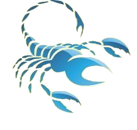

Овен
«А вместо сердца – пламенный мотор…» - эти строчки полностью отражают то, как ведет себя Овен в любви. Такой человек не будет молчать о чувстве, он раскроет сердце и будет так красиво ухаживать, что невозможно перед ним устоять. По натуре – истинный романтик. Он нежен, чуток и заботлив. Слов на ветер не бросает, а все обещания обязательно исполняет. Совместимость знака зодиака в любви хорошая со многими из зодиакального круга. В браке он верный, надежный и искренний супруг. Вот только подчиняться он не станет, так как не выносит командного тона и приказов. В таком случае, его уже не удержишь.

Совместимость Овен и Овен
Женщина-Овен — Мужчина-Овен
Какие могут совершать ошибки Овны когда вступают в близкие отношения друг с другом? Ошибок может быть много, но в принципе и удач у такого союза может быть практически столько же.
После того как сильные «эго» этих двух аур смешаются, то придется освободить место для старта ракеты, в виде вспышки их взаимных симпатий. Совместимость Овен и Овен говорит нам о том, что мужчина, что женщина этого знака будут очень рады встречи с таким же, как они экстравагантными, импульсивными и болтливыми личностями, которых не смущает что их партнер часто опаздывает на назначенную встречу.
Большая часть представителей этого знака зодиака не терпят две вещи: фотографироваться и ходить к стоматологу. Снимок может не удачно получится, а сидеть неподвижно и молча, пока фотограф готовится вас сфотографировать – это так же невыносимо для них, как лечение зубов на приеме у стоматолога. Самолюбивым Овнам мысль о том, что они в данный момент выглядят так отвратительно, просто невыносима.
Но то, что Овны боятся стоматологов, не говорит о том, что они являются трусами. Планета, которая управляет данным знаком – Марс, она щедро наделила своих подопечных мужеством. Дело в том, что просто Овны не терпят каких-либо лекарств, не переносят, когда что-то делают с их ушами, глазами, головой, ртом, носом, а если кто-то будет пытаться поменять ход их мыслей или каким-то образом захочет повлиять на их мнение – они больше никогда не будут общаться с этим человеком.
Совместимость Овен и Овен в любви
Поладить двум Овнам не просто, даже если они страстно влюблены друг в друга. Необходимо часто идти на уступки, трудиться над собой. Если они вместе преодолеют жизненные трудности, то совместимость Овен и Овен в любви будет хорошая. Проблема в том, что они сами создают себе препятствия на пути к счастью.
В интимной близости лучше разделить роли, где один доминирует, а другой подчиняется. На таком уровне отношения будут терпимыми для обоих. Главное, научиться подстраиваться и учитывать «минусы» друг друга. Тогда их любовная история станет примером для многих.
Женщина-Овен очень редко посещает парикмахера, ведь она не сомневается, что он все равно причешет ее не так, как ей бы хотелось. Кроме этого, она может даже сама себе отстричь волосы, правда потом может пожалеть об этом, но никогда не позволит, чтобы это сделал кто-то другой. Представители этого знака зодиака требовательно относятся ко всему, что связано с их головой. Овнов никогда не напугают трудности, независимо от того возникнут они в результате оказания помощи себе или другим людям. Их благородный порыв отдать больше, чем может потребоваться: преданности, денег, времени усиливает планета, управляющая ими.
Совместимость Овнов, говорит о том, что если на них не будет влиять Асцендент или Луна в знаках Рака, Козерога или Тельца, то они будут способны спокойно занять друг у друга денег, не настаивая точно в срок вернуть их, что и укрепляет их взаимную симпатию. Они никогда не обманут друг друга, ведь они не знают даже как это делать.
Независимо от того, что они могут забыть о своем долге или переоценить свою платежеспособность, их нельзя назвать из-за этого подлыми или нечестными, просто они увлеклись чем-то поразительным, совершенно новым, что-то поглотило полностью их внимание. Забывая о том, что им нужно заплатить, они могут ни с того ни с сего выложить все чем владеют, и возможно даже больше. Поэтому совместимость Овнов может быть идеальной, но только если они не задолжают друг другу денег.
Совместимость Овен и Овен в дружбе
Сочетание Овнов в дружбе хорошее, но легкой ее назвать нельзя. Взаимопонимание будет достигнуто, если оба спокойно и жизнерадостно посмотрят на жизненные перипетии. Для того, чтобы в дружбе присутствовала гармония, нужно чаще принимать компромиссные решения.
Находясь в одной компании, Овен будет стремиться к лидирующей роли, попытается завоевать все внимание публики. Роль подчиненного его не устраивает. Для того, чтобы улучшить дружескую связь, нужно считаться с интересами друг друга. Желательно, Овну не «гнуть» свою линию в дружбе, а постоянно идти на компромисс.
Ни один из представителей данного знака не будет жалеть о том, что у него закончились деньги. Ведь в этом нет ничего страшного, зачем же унывать, скоро они обязательно появятся. Кроме этого, один другому будет очень признателен за доверие. Они не просто полностью доверяют, но и никогда не смогут воспользоваться друг другом в корыстных целях, что собственно говоря, будет идеально способствовать их теплым отношениям.
Совместимость Овнов – это настоящая карусель счастья, но после того как растает розовый леденец, вполне вероятно что может наступить и разочарование. Как только Огонь с Огнем встречаются, всегда образуется жаркое пламя. Но отношения могут сложиться и иначе, если они смогут побороть свои неукротимые, непобедимые и легкоранимые души.
Среди экстравертных Овнов иногда попадаются такие, которые не сильно соответствуют характеристикам этого знака зодиака. Происходит это по причине того, что их «эго» еще в детском возрасте было подавлено. Такие люди полностью сосредоточены на себе, что совершенно неестественно для остальных людей рожденных под этим знаком. И может показаться, что два этих партнера могут вызвать друг у друга только гнев, но это не так. Рано или поздно, стычка между ними, конечно же, произойдет, после того как Марс столкнется с Марсом. Во тогда-то грандиозной войны избежать не удастся. Но приступы дикой вражды будут тесно связаны с высокими взаимными чувствами.
Совместимость Овен и Овен в деловых отношениях
Работать вместе два барана смогут, хотя напряженность и желание перетянуть «одеяло» на себя, будет всегда. Только кропотливый труд над своим внутренним миром поможет установить гармоничную совместимость Овен и Овен в делах. Между ними, как и во всем коллективе, возможны споры и конфликты.
Они смогут отлично поладить, если один из них – начальник, а другой – подчиненный. В таком случае, оба найдут общий язык и смогут плодотворно сотрудничать. Правда, без выяснения отношений и бури страстей не обойдется. Им нужно быть сдержаннее, чтобы не навредить совместной работе.
Чтобы отношения стали более гармоничными, нужно чтобы один из партнеров проявлял свою волю по одним дням недели, а другой занимал позиции лидера в остальные дни недели. Хочется отметить, что это вполне возможно, ведь Овен никогда не откажется от того, чтобы периодически оказываться на вторых ролях, зная заранее, что на следующий день ему вернут первенство.
Оба партнера знают себе цену, но собственного знания им недостаточно. Им необходимо, чтобы их любили и ценили. Совместная жизнь или общение мужчины-Овна и женщины-Овна может оказаться настолько потрясающей, что даже самый упрямый Баран не сможет не смягчить свою агрессию и самолюбие.
Совместимость их хороша тем, что даже самая глубокая обида между ними не сможет длиться долго, ведь они по-детски верят в то, что ссору всегда можно прекратить и снова восстановить дружбу, в то время когда все остальные теряют всякую надежду.
Совместимость говорит нам о том, что оба партнера никогда не позволят водить себя за нос и никогда не позволят принудить себя к каким-либо действиям силой. Стремление знака зодиака Овна начинать вести за собой настолько сильное, что даже дружеское предложение они могут рассмотреть как попытку вмешательства в их личную жизнь.Совместимость Овен и Овен: проблемы в отношениях и пути их решения
Проблема.
Проблема в том, что каждый упорно стремится к лидерству в отношениях. Им не хватает терпимости и уступчивости, что негативно отражается на совместимости. Это не значит, что они моментально расстанутся, не найдя общий язык. Но, им сложно доводить до завершения дело, начатое совместно. Данная категоричность может привести их к разрыву. Они уверенно шагают по жизни, не обращая внимания на проблемы, которые нужно решать вместе. Каждый замечает только себя, бросает вызов и игнорирует желания партнера. Из зодиакального списка Овен один из самых непримиримых знаков.
Решение.
Если они будут чаще разговаривать «по душам», не скрывать своих истинных стремлений, то путь решения проблемы найдется. Им нужно не только смотреть в одном направлении, но также быть чутче, внимательнее друг к другу. В таком случае, каждый из них станет прислушиваться к партнеру и двигаться вперед, учитывая его потребности, планы. Совместимость будет отличной, если они почувствуют, что важны и необходимы друг другу в любую минуту. Отношения должны постоянно «подпитываться», а сердца звучать в унисон. Тогда решение существующей между ними проблемы отпадет само собой.
Проблема.
Овны терпеть не могут оказываться в списке «проигравших», поэтому без соперничества и конкуренции своей жизни не представляют. Их раздражает само слово «поражение», а это уже проблема во взаимоотношениях двух баранов. Если между ними исчезает гармония и понимание, то начинается жесткая борьба за лидерство. Они могут посмеиваться, подтрунивать друг над другом в моменты неудач. Они сразу же становятся гордыми, воинствующими, забывая о сочувствии. Эта проблема не позволяет им насладиться радостью от общения и прийти к обоюдному согласию.
Решение.
Выход обязательно найдется, если они будут нежны, мягки, обходительны друг с другом. Не стоит отказываться от борьбы за «пальму первенства», но нужно сделать ее более откровенной, искренней. Овны - ярые противники лести, позерства и лукавства. Им нужно твердо знать, что они сражаются не зря и впереди их ждет заслуженная и честная победа. Их совместимость сложно разрушить, если оба пойдут на компромисс, а в приоритет поставят дружбу или деловое сотрудничество. В таком случае, можно увидеть путь решения проблемы, которая мешает создать плодотворный тандем.
Проблема.
Овном управляет воинствующая «красная» планета Марс, поэтому этот знак зодиака априори наделен жесткостью. Проблема в том, что свой гнев и агрессию, они часто вымещают друг на друге. И такое эмоциональное состояние выражается не только в жестах или гримасе, но и резкой и ненормативной лексике. Гармонии в паре не будет, пока оба щедро пускают в адрес друг друга «острые пики» своего негодования. Что будет, если Овен сдержится? Ему просто разорвет от той злости, которая накопилась внутри, а от возникшей обиды может появиться отчужденность в отношениях.
Решение.
Если они позволят друг другу слегка разрядиться внутренне и сдержать эмоции, то путь решения данной проблемы будет ясен. Не стоит переживать за то, что оба не смогут жить и общаться иначе. Наоборот, гнев и непримиримость отойдут в сторону, что уже благоприятно повлияет на отношения. Если направить свою импульсивность и эмоции в другое русло, к примеру, на интимную близость или деловое партнерство, то это приведет к ошеломляющему успеху и взаимопониманию. Путь решения проблемы еще в том, чтобы научиться признавать свою вину и извиняться за свои вспышки гнева.
Совместимость Овен и ОвенСовместимость Овен и Овен (мужчина и женщина)
Для того, чтобы хотя бы на минуту представить их совместимость, нужно вспомнить героев известных фильмов. К примеру, Деми Мур из «Солдата Джейн» и Рассела Кроу из «Гладиатора». Оба по натуре «капитаны» корабля и никто не хочет уступать другому место за штурвалом. «Ты снова оставила грязную посуду в раковине?! – возмущается один Овен. «Если тебе нужно, то вымой. Кстати, ты вчера так и не пропылесосил ковер в гостиной» - вторит другой.
Овен – стихия Огня, что уже говорит о многом. Между ними возможна настоящая страсть, вечная борьба за главное место под солнцем. Их союз постоянно балансирует на «грани фола», где скандалы и выяснения отношения нормальное явление. Но, если между ними есть чувство, то это не страшно. Бояться стоит резкого «холода» и равнодушия.
Зато в интимном плане могут подарить друг другу неземное удовольствие, если окажутся на одной «волне». Два собственника, которые цепляются за личную свободу – так можно сказать об Овнах. Но вечная борьба изматывает, поэтому если они хотят сохранить союз, то придется уступать, подчинятся. А что в ответ? Взаимное уважение, конечно же.

Совместимость Овен и Телец
Отношения между Овном и Тельцом
То, что у них есть рога, и черты характера у Овна - стремление идти напролом, а у Тельца – упрямство, могут показаться идентичными. Но это не говорит о том, что у Овна и Тельца хорошая совместимость. Разногласий в их взаимоотношениях просто не удастся избежать. Эти на первый взгляд одинаковые черты характера вскоре окажутся разными.
Вот, к примеру, если Овен говорит своему ребенку-Тельцу, чтобы он все съел до последней крошки, лишь только после этого он сможет выйти из-за стола – это называется идти напролом. А вот когда ребенок в ответ ему продолжает спокойно отвечать, что он все равно не будет есть – вот это называется упрямством.
После нескольких столкновений их разница и несовместимость станут видны. Способный идти напролом Овен будет инициатором, а упрямец Телец только лишь реагировать на его требования.
Несмотря на то, что Овнов часто обвиняют в том, что они всегда за собой сжигают мосты и непринужденно рассыпают вокруг искры, у них есть и хорошие черты характера.
Тельцы же, всегда дуются, выжидают упорно того момента, когда они смогут своим упрямством задавить энтузиазм Овнов. Но время от времени у них начинает работать воображение, если этого им действительно хочется. Кроме этого, они обладают удивительно теплым чувством юмора, отличаются глубокой мудростью, но все эти черты их характера хорошо скрывает их практичность.
Совместимость Овен и Телец в любви
В любви Овен достаточно импульсивен, активен, а Телец, наоборот, даже в чувствах разумный, практичный до предела. Но, они могут создать благоприятный союз, если проникнуться желаниями и пойдут друг другу навстречу, особенно, в трудные моменты.
Телец будет для Овна надежным, верным партнером, если оба не станут стремиться к лидерству, закрывать глаза на важные аспекты. Совместимость Овен и Телец в любви должна быть основана на уступках, заботе, чувственности в интимной сфере. В противном случае, даже незначительные нюансы и мелкие ссоры могут привести к разрыву отношений.
Овны склонны к агрессии, экстравагантности, импульсивности. Они любят поговорить, очень часто проявляют свою волю и всегда настроены только на оптимизм. Гоняясь за скорыми результатами, они не перестают верить в чудеса. В противном случае, жизнь стала бы для них невыносимо скучной.
Тельцы же практичны, немного пессимистичны, сдержанны, всегда довольны собой, не любят тратить слова впустую, любят стабильность, надежность. Кроме этого, условие, которое может обеспечить им более или менее сносное существование – спокойствие и отдых.
Два «рогатых» знака зодиака по праву нельзя назвать братьями-близнецами. Их внутренняя мотивация, внешние проявления различны. Но иногда может показаться счастьем встретить на своем пути человека, который бы обладал теми качествами, которых вы лишены.
Тельцу больше всего подходит сострадательная, терпимая роль по отношению к своему так называемому «брату-близнецу». Овен должен будет всеми силами пытаться подражать спокойствию, безмятежности своего «брата». Ведь спокойствие, безмятежность – это синонимы, так или иначе, а слово «слабость» - недопустимо.
Совместимость Овен и Телец в дружбе
Дружба может возникнуть сразу же, после первого знакомства. У них немало общих тем для разговоров, поэтому скучать не придется. Оба, словно дополняют друг друга, живо делясь последними новостями, личными событиями в жизни.
Совместимость Овен и Телец в дружбе может омрачиться придирками и ссорами. Кстати, провоцировать конфликты способен каждый из них. Причиной раздора могут стать банальные мелочи, а не серьезные причины. Наоборот, в основных вопросах, они солидарны. Овну нужно «держаться» за такого верного, открытого друга.
За мужеством, независимостью, которую могут демонстрировать Овны, скрывается непринужденность, Тельцы с пониманием к ней относятся. Рассматривая совместимость Овна и Тельца, можно сказать, что их интуитивно притягивает к друг другу. Телец имеет сильное стремление к финансовой независимости. Они понимают, что только именно благодаря неутомимости и энергичности Овна они смогут добиться своей цели.
Овен, независимо от того, мужчина это или женщина, тайно будет ненавидеть осторожность, сдержанность своего партнера. Но одновременно с этим, он отчетливо будет понимать, что он может получить немалую выгоду от рассудительного и трезвомыслящего партнера.
Оба этих солнечных знака чувствуют, что могут многому научиться друг у друга. Поэтому-то Овен ощущает некую зависимость от Тельца, особенно это относится к тому случаю, когда поспешность Марса приводит к тому, что они навлекают на себя массу сложностей.
Совместимость Овен и телец в деловых отношениях
Они неплохо сработаются, если будут трудиться в одном коллективе, или заниматься общим бизнесом. Оба способны быстро прийти к успеху и стать состоятельными личностями. На совместимость может плохо повлиять тот факт, если сферы деятельности будут разными. Тут без конкуренции дело не обойдется.
Возможны конфликты на работе по незначительным вопросам. Телец спокойно позволит Овну собой управлять, но только на определенных и «гибких» условиях. Если оба договорятся о сотрудничестве, то добьются хороших результатов труда.
Каждый из них сможет, благодаря другому, добиться в жизни гораздо большего, нежели если они будут действовать самостоятельно. Иногда Тельца может начать раздражать Овен, действия которого будут превышать пределы его терпения. Тогда он размышляя над происходящим, поймет, что свои силы он расходует впустую.
Или Телец попросту откажется поддерживать пламя мечтаний Овна. В результате второй будет вынужден уйти, чтобы не стать жертвой депрессии, которую ни один представитель зодиакального круга, находящийся под властью Марса, вытерпеть не в состоянии.
Овна порой могут начать раздражать приступы меланхолии, сосредоточенности на себе, которыми наделены Тельцы. Время от времени он будет пытаться уговорить Тельца сходить на вечеринку или же каким-то образом проявить свою активность, а это может в результате нарушить его стремление к уединению. Совместимость может оказаться идеальной, если Овен научиться поощрять врожденную любовь к природе, живописи и музыке Тельца, чтобы не нарушить его спокойствие и безмятежность.
Совместимость Овен и Телец: проблемы в отношениях и пути их решения
Проблема.
Если они столкнуться «лоб в лоб», то проблемы в отношениях неминуемы. Каждый будет доказывать свое, отстаивать личные интересы. В итоге союз станет шатким, что приведет к постоянным спорам и «перетягиванию каната» на свою сторону. Говоря о совместимости, нужно учитывать то, что Телец постоянно оглядывается назад, а Овен смотрит только вперед. Между ними возникает преграда из возмущения и обид, в результате которых Телец будет упрямым, а Овен слишком агрессивным.Решение.
Пути решения проблемы найдутся, если они перестанут доказывать свою точку зрения в любых ситуациях. Эти знаки зодиака безумно боятся попасть в зависимость, а надо бы, наоборот, помочь каждому добиться успеха в работе, достигать гармонии в близких отношениях. Овен должен больше доверять, чтобы не подозревать его в неискренности, лукавстве. Каждый из этой пары обязан, в первую очередь, уважать чувства, стремления, интересы друг друга. Благодаря ответственности, заботе, они смогут найти общий язык, сохранить теплые взаимоотношения.Проблема.
Овен постоянно провоцирует Тельца на спор и конфликты, а тот, в свою очередь, начинает рьяно с ним конкурировать. Данная проблема в отношениях мешает им договориться и мирно сосуществовать. Сложно говорить о совместимости Овен и Телец, если один боится расстаться со своей независимостью, а другой упирается «рогами», держится за свои принципы. Если Телец устал, раздражен, то Овну его лучше не трогать, не докучать расспросами. Оба подавляют не только внутренние желания, цели, но и «гасят» сексуальную страсть. Даже в интимной обстановке они проявляют непримиримость.Решение.
Обязательно найдется, если оба откажутся от роли «победителя» и сядут, наконец-то, за стол переговоров. Если между ними есть настоящие чувства, то их нужно беречь, а не прятать. Разговор «по душам» - ключ к решению проблемы. Совместимость возможна при условии, что в отношениях они будут уважительнее относиться друг к другу, признавать свои «минусы» в поведении. Овен должен прислушиваться к мудрым советам Тельца, а тот не обижаться на критические замечания партнера. Если они будут снисходительными, более чуткими друг к другу, то их союз станет притчей во языцех.Проблема.
Не замечают интересов друг друга. Они видят только себя, свои стремления. На плохую совместимость влияют так же вопросы финансов и имущества. Телец умеет экономить, копить деньги, в отличие от Овна. В связи с этим оба никак не придут к консенсусу и регулярно ссорятся на бытовой, материальной почве. Телец часто задумывается о будущем, складывает деньги в «кубышку», а Овен живет сегодняшним днем и не собирается отказывать себе в роскоши и удовольствиях. Претензии зашкаливают, что создает немало проблем в отношениях.Решение.
Если они не найдут верный путь решения финансовой проблемы, то оба останутся без рубля в кармане. Они будут часто раздражаться, злиться и обижаться друг на друга. Совместимость будет отличной, если Телец все-таки научит Овна рациональности, практичности в покупках. Они оба должны составлять бюджет на будущее и не брать финансы в долг. Благодаря этому, они смогут достичь понимания в быту, в хозяйстве, в денежных вопросах. Материального благополучия достигнут, если будут работать в одной команде. Тогда и цели будут единые, и желание сколотить достойный капитал.
Совместимость Овен и Телец
Овен мужчина и Телец женщина Овен мужчина, как в воздухе или сосуде прохладной воды, нуждается в Тельце женщине. Они достойны другу друга, потому что всей душой стремятся объединиться и создать крепкий союз. Он, словно от летнего солнца или сильной бури, укрывается в тени рассудительной и спокойной женщины Тельца. Им хочется комфорта и уюта, что уже хорошо влияет на близкие отношения.
Даже в зодиакальном круге они стоят рядышком, поэтому могут понять друг друга с полуслова и полу взгляда. Они способны снизойти до тех отношений, которые будут устраивать обоих. Но для этого женщине Тельцу потребуется стабильность, а Овну мужчине полное доверие партнеру. Ей хочется наполниться его энергией до края, чтобы испытать чувство надежности и не пытаться что-то изменить. Овен мужчина ощущает себя в безопасности, когда рядом с ним женщина-Телец. На этой почве возникает симпатия, глубокое чувство, что благоприятно сказывается на отношениях. Ей свойственно гасить его гнев и активность, а он, наоборот, пытается «разжечь» в ней огонь страсти.
Совместимость: Овен женщина и Телец мужчина
Совместимость Овен и Телец редко бывает долгой и крепкой, но она возможна при полном взаимопонимании. Мужчина-Телец по натуре уравновешенный и приземленный, он также стремится к домашнему очагу. Женщина Овен пытается создать скандал из любой мелочи, лишь бы выпустить «пар» и доказать превосходство. Если она не идет ему на уступки и теряет к нему интерес, то Телец уходит в уныние и чувствует себя ненужным. Энергичная и независимая она требует самоотверженности и благородных поступков.
Ей нужен настоящий рыцарь, который не будет напрягать ее домашними хлопотами и воспитанием детей. Все его внимание должно быть направлено только на нее. Телец мужчина, наоборот, желает видеть рядом с собой истинную женщину, похожую на его маму – заботливую, милую и хозяйственную. В начале их отношения будут безоблачными и сдобренными порцией романтики. Она покорена его спартанским спокойствием и выдержкой, а мужчина Телец очарован ее природным данными и неподдельной страстью. Но со временем «пелена» с глаз спадет, обнажив недостатки характера обоих.

Совместимость Овен и Лев
Совместимость между Овном и Львом
Во всех делах Овны любят ощущать себя бесспорными победителями, независимо от того будет ли это касаться любви или дружбы, а также семьи. Таким образом, они возвеличивают себя в своих же собственных глазах. А Льву не требуется доказательств его превосходства. Он царь зверей, и естественно, он рожден для главенства. Поэтому когда мы говорим о совместимости Овна и Льва, то в первую очередь мы обращаем внимание на то, хватит ли им обоим места на той вершине, на которую оба хотят попасть.
На внушительной площади, где предостаточно место, они вполне бы смогли получить свою долю оваций. Но если говорить о поле с меньшими размерами, к примеру, об офисе или о небольшом жилом помещении, типа квартиры, дома или классической комнаты, то в таком месте им наверняка будет очень тесно. Их отношения станут гармоничнее, если хотя бы кто-то один из них решиться на то, чтобы пожертвовать своим честолюбием. Но сделать это будет не так-то просто.
Овну придется покориться величию Льва, который от рождения призван повелевать и командовать. Он рожден свободным, поэтому не может покоряться кому-то, включая задиристого Барана. Овен любит побеждать, ему придется умерить свой пыл, не пытаться завоевать победу.
Но для Овна еще не все потеряно. Когда мы говорили о том, что ему не удастся победить Льва, мы имели в виду тот факт, что он не сможет противостоять Льву в публичных выступлениях. Наедине Овен может добиться все что угодно, просто ему нужно будет согласиться выслушать наставления Царя зверей, не скупаясь при этом на похвалу, тщательно скрывая свои собственные намерения и мысли.
совместимость овен и лев в любвиСовместимость Овен и Лев в любвиГоворят, если люди похожи, то они влюбляются друг в друга с первого взгляда. Конечно же, и между Овном и Львом такое возможно, но это нонсенс. Единственное, что их притягивает – это сексуальное влечение. Они оба натуры темпераментные, властные.
Деньги лучше доверить экономному Овну, а не транжире Льву. Во всем остальном им придется часто идти на уступки, чтобы укрепить отношения. Ну, а если это настоящая любовь, то, тем более, без компромисса и терпения им не обойтись. Льву придется подчиняться Овну, что уже заоблачная мечта.
Что касается первого, Овну сделать это будет намного легче, ведь представители данного знака зодиака любят поднимать окружающим настроение, осыпать их комплиментами. Но вот что касается того, что им придется скрывать свои намерения, то это слишком тяжело. От хвастовства Овна Лев пожелает удалиться, и он, конечно же, будет оскорблен, так как подумает, что его обидели или отодвинули в сторону. А это для его гордости слишком болезненный факт.
Если Лев не в состояние будет удалиться от Овна, к примеру, если это будет касаться ребенка или супруга, то он просто надувшись, будет сидеть в углу и зализывать свои раны с грустным и обиженным взглядом. Но, находясь в таком состояние, он, может с яростью наброситься на своего обидчика. Чем может закончиться такая ссора вы, наверное, уже догадались.
Для Овна безопаснее просто заставить Льва поверить в то, что в данном союзе именно он является победителем. Ведь никто не сможет быть больше таким великодушным, как Лев, купающийся в изнеженности. Изнеженность является именно тем талантом, в котором Овен сильно уступает Царю зверей.
Еще Эзоп в своих баснях рассказывал нам о том, как шакал легко справлялся со львом. Как только лев впадал в ярость, шакал хитростью быстро возвращал его милость, напоминая ему, что он ведь Владыка зверей, и поэтому ему негоже воспринимать всерьез столь низкого и ничтожного шакала.
Совместимость Овен и Лев в дружбеСовместимость Овен и Лев в дружбеЧто-что, а дружить между собой они умеют. Им всегда интересно и комфортно вместе, особенно, если в запасе есть пикантные темы и цели. Чтобы совместимость Овен и Лев в дружбе стала еще лучше, они должны смириться с недостатками друг друга. Как говорится, все мы не без греха.
У этой дружеской пары масса общего – от интересов до привычек. Хотя, временная передышка в отношениях все-таки потребуется. Лев немного эгоистичен и эгоцентричен, что настораживает и раздражает Овна. Но зато они могут спокойно положиться друг на друга в трудный момент. А это, товарищи, дорогого стоит.
В этом союзе может быть все устроено немного иначе, ведь Овен – это не шакал. Он, скорее всего, предпочтет следующее: заявит Владыке всех живых существ, чтобы он убирался вон или сдавался, и этим самым он способен загнать их обои в тупик. Ведь для Льва сдаться или покинуть поле битвы будет означать трусость. Поэтому Льву реагируя на такое поведение Овна, ничто не остается, как проявить свой характер, громко и яростно.
В конечном итоге Овен, конечно же, поймет, что он не в силах побороть Льва, что морально, что физически и тогда между ними останется только брань, продолжающаяся до бесконечности, так как эти знаки любят драматические монологи и прозы.
Несмотря на то, что Властелин зверей и одерживает победу, он не считается тем, кто готов захватить свой трофей, кто устрашающе грозит побежденному стереть его в порошок. Лев в отношении к пострадавшему ведет себя всегда благородно и великодушно. Не нужно забывать о том, что знак зодиака Овен лишен качества красиво проигрывать. А вот если он научится это делать, то он вполне сможет поладить со Львом.
Их совместимость рассказывает нам о том, что этим двум знакам зодиака не будет хватать искреннего восхищения. Когда военные действия между ними будут окончены, они будут готовы принести клятвы в вечной покорности. Но как только между ними снова возникнет битва, вся их покорность, преклонность исчезнет и все начнется снова.
Совместимость Овен и Лев в деловых отношениях Совместимость Овен и Лев в деловых отношенияхПеред нами две ответственных и трудолюбивых личности. Значит, им судьбой уготовано работать вместе и великолепно сотрудничать. Потом они будут перетягивать «одеяло» на свою сторону, но тут отпечатки накладывают их сила и страсть к лидерству.
Совместимость Овен и Лев в деловых отношениях может омрачиться частой конкуренцией и амбициями. Увы, Лев никогда не потерпит, чтобы Овен им командовал и был выше в должности. Подчиняться? Да, никогда! Поэтому, им лучше трудиться на равных условиях и одной тропой идти к успеху. Ну, и желательно в разных крупных компаниях.
Их отношения скорее гармоничные, но только если Овен будет смотреть на своего партнера, будь то любовника, супруга или коллегу как на наставника или как на советника. И тогда Лев будет окружать его теплотой и заботой.
Лев может осыпать Овна комплиментами, вполне искренними и неподдельными, что ему на самом деле действительно нужно. И наоборот. Эти знаки зодиака испытывают острую нужду в том, чтобы их начали ценить. Даже если стычки между ними будут крайне серьезными и очень болезненными, то умение прощать поможет им в этом нелегком положении.
Если Овну удастся добиться того, что Лев начнет что-то делать, а не только отдавать команды, то их союз станет теплее. Так как Овен не переносит приказы, то ему придется приложить не дюжину усилий, чтобы стать более покладистым и заставить Царя что-то сделать. Но это нужно ему сделать, в противном случае отношения станут подобием борьбы за власть и бесконечных дрязг.
Совместимость Овен и Лев: проблемы в отношениях и пути их решения
Проблема.
Их отношения всегда балансируют на грани, что создает немало проблем обоим. Они не способны сдержать эмоции и порывы, а постоянно гонятся за своими желаниями. Каждый по-своему неукротим и непобедим, но упорно доказывает превосходство. Совместимость Овен и Лев находится под прицелом психического «обстрела». Но, если они увлекаются одним делом или меняют обстановку, то отношения меняются. Овен куда-то торопиться, а Лев тоже бежит, но только в обратном направлении. Им обоим нужно остановиться, посмотреть друг на друга и, наконец-то, понять, что жизнь не стресс, а удовольствие.
Решение.
Какие пути решения проблемы тут можно предложить? Для начала нужно взять одинаковый темп, мирно договориться и выслушать друг друга. Им следует набраться терпения и усмирить пылкие порывы. Они оба принадлежат к стихии Огня, поэтому способны, как разжечь костер, так и дружно его потушить. Нельзя позволять друг другу «перегореть», иначе чувства трансформируются в кусок льда. Овен обожает быть в центре внимания, общаться с друзьями и путешествовать. Как прекрасно! Ведь, все это так близко активному Льву.
Проблема.
Проблема в том, что они стремятся стать независимыми и не хотят считаться с интересами и желаниями друг друга. То Овен дает приказания Льву, то Лев «рычит» на Овна. Разве может идти речь о совместимости этой несдержанной и импульсивной парочки? Создается впечатление, что они оба мчатся по трассе, не замечая светофоров, пешеходов и постовых. Овен постоянно что-то доказывает Льву, а тот становится зачинщиком споров и скандалов. У них нет единой цели и плана, что уже является проблемой. Пытаясь оказаться в центре всеобщего внимания, они оказываются за «бортом» своих отношений.
Решение.
Они вместе должны найти решение проблемы во взаимоотношениях. Нельзя же, постоянно сражаться на шпагах и вызывать друг друга на дуэль. Конечно же, оба лидеры по натуре, но первое место все равно достанется только одному. Жаль, что после этого им придется навсегда расстаться. Чтобы сохранить союз, Овну нужно быть сдержаннее эмоционально, а Льву интересоваться его планами и настроением. Путь решения проблемы ясен – им нужно смириться с недостатками друг друга. Требовательными можно быть в совместном бизнесе, но не в близких отношениях.
Проблема.
Если у Овна и Льва не было бы проблем в отношениях, то они бы их обязательно придумали. Эти двое жить не могут без препятствий, борьбы и доказательств собственного «я». Разве я могу быть вторым или третьим?! Нет. Только первое и почетное место. Так думает каждый из них. Им нужно научиться восхищаться талантами и достижениями друг друга, а не подтрунивать и злиться. Они там, где трудно! Овен стоит на пьедестале и ждет, когда награждения, а Лев требует аплодисментов в свою честь. Извечная борьбу двух сильных мира сего…И это серьезнее, чем кажется.
Решение.
Решение проблемы найдется, если посмотреть на нее иначе. К примеру, сконцентрировать энергию и внимание на чем-нибудь более полезном. Научиться этой паре смотреть в одном направлении, а не пускать «стрелы и пыль» в глаза друг друга. Совместимость Овен и Лев возможна, если они откажутся от морального «давления», а также перестанут доказывать, кто лучше, сильнее, любвеобильнее. Им нужно не только доверять, но и искренне поверить друг в друга. Сегодня Лев стоит на сцене, а Овен ему дарит цветы за удачное выступление, а завтра они могут поменяться ролями. Сплошная идиллия.
Совместимость Овен мужчина и Лев женщина
Два ярких представителя стихии Огня – Овен и Лев, которые легко воспламеняются страстью и, так же резко могут утратить интерес друг к другу. Горячие, импульсивные, прозорливые натуры сразу же выделяются из многоликой толпы. Хотя, уступчивый Лев по сравнению с гиперактивным Овном «душка» и сама покорность. Лев женщина легко поддается соблазну со стороны мужчины Овна. Но она требует к себе не только внимания, но и почитания.Им нужно прекратить «красоваться» друг перед другом, и всерьез займутся построением крепких отношений. Овну хочется по-отечески опекать, заботиться о Львице, что она спокойно принимает. Ведь, старший никогда младшего не обидит и без «куска» не оставит. Он знает, что она любит комплименты, овации, щедрые подарки, поэтому не скупиться на то и другое.
Важно то, что они умеют благодарить друг друга за все, что делают и говорят, а это уже благоприятно отражается на Совместимости Овен и Лев. Глядя на них, люди восторгаются и еще раз убеждаются, что вечная любовь не сказки, она существует. Овен и Лев способны на глубокие чувства, но вот беречь то, что они создали…Им нужно еще этому научиться и, желательно, вместе.
Читайте подробнее:
Совместимость Мужчина-Овен Женщина-Лев
Совместимость Овен женщина и Лев мужчина
Бывают союзы, которые создаются на страсти и влечении, а здесь идет речь о творческом тандеме, не лишенном взаимности и притягательности. Совместимость Овен и Лев основана на общности взглядов, интересов и богатом внутреннем потенциале.
Овен женщина вдохновляет мужчину-Льва на творческие порывы и плодотворную работу. Позже он будет гордиться такой «музой», ведь благодаря ней, собрано столько восторженных речей и признаний. Овен и Лев – великолепный тандем, где двое живут и творят в унисон. Несмотря на то, что женщина-Лев гордая и независимая натура, она легко попадает под влияние Овна мужчину. И ничуть об этом не жалеет. Главное, чтобы она по-настоящему любила и ценила своего «героя».
В противном случае, их ничто не удержит вместе – ни работа, ни увлечения, ни общие дети. Хотя, в зодиакальном круге «огненная» пара Овен и Лев достаточно крепкая и гармоничная. Они легко находят общий язык, редко ссорятся. Даже, если между ними и случаются конфликты, то лишь для общей психологической «разрядки». Как говорится, если выплескивать пар, то лучше на близкого. Он поймет, простит, тем более, если сильно любит.

Совместимость Овен и Скорпион
Совместимость Овен и Скорпион
Тайная мечта Овна – это стать лихим пиратом, как чувствует себя Скорпион. Ведь пираты всегда отважны, храбры и романтичны. Но Овен чаще всего растрачивает свою энергию понапрасну, проявляя чрезмерную эмоциональность в момент защиты. Представители данного знака зодиака никогда не будут атаковать первыми, но в случае если они почувствуют, что им угрожает реальная опасность, то их планета покровитель – Марс придет им на помощь.
Скорпионы – это мастера нападений. Для них присущи терпение, разработка стратегии, хладнокровие и чутье, которое позволяет им распознавать слабости окружающих. Поэтому про совместимость Овен и Скорпион нужно сказать, что вы не сможете никогда увидеть Скорпиона чрезмерно расслабленным, суетливым и бьющим своим жалом без умысла. Они направляют его всегда точно в цель.
Овен не будет идти напролом по отношению к Скорпиону, как обычно они могут поступать с иными знаками зодиакам. Баран, конечно же, намного настойчивее и более твердый, но как только придет время открывать карты, Скорпион попросту исчезнет либо будет молчать, тем самым вводя своего партнера в недоумение, размышляя, кто же все-таки одержал победу?
совместимость овен и скорпион в любвиСовместимость Овен и Скорпион в любвиДля кого-то любовь «вздохи на скамейке», а для них лучше вздыхать в постели и изнывать от страсти друг к другу. Действительно, эту пару объединяет взаимное сексуальное влечение, что само по себе уже редкость. Гармония души может возникнуть, но для этого обоим нужно не один пуд соли съесть.
Чтобы совместимость Овен и Скорпион в любви стала гармоничной, они должны пройти проверку на прочность, доверять друг другу и не заниматься «переделыванием» партнера. Страсть со временем поутихнет, а вот над отношениями следует неустанно работать. Причем, обоим.
Если Овну вначале покажется, что он победил своего оппонента, твердой уверенности в этом он никогда не получит, его всегда будут мучить догадки. Ему не нужно обладать большой мудростью, чтобы понять, что лучше всего общаться со своим партнером на безопасном от себя расстоянии – это касается сотрудничества, а вот какая будет совместимость в более близких отношениях, то тут уже немного другое.
Скорпион не готов идти на компромисс, и Овен также верен своим идеалам и достаточно честен. Кроме этого, он не захочет принять поражение, посему не будет готов сдаваться. Овен такой же. Такое упрямство может сказаться не в пользу данного союза.
У Скорпиона есть важное, непреодолимое и неумолимое качество, которого лишены Овны – сила воли. Оно создает для него сильную ауру. Но это совершенно не означает, что представитель этого зодиакального знака будет нападать словно Дракула. Обычно все Скорпионы, независимо от того, мужчина или женщина, милые, спокойные и вполне приятные личности. Вежливые, интересные и достаточно умные, они не будут робкими, беззащитными или ненадежными. Поэтому, говоря за совместимость Овна и Скорпиона, скажем, что Овны из-за мягкого голоса Скорпиона, столь ненавязчивого поведения, и не явно выраженной агрессивности, не должны обманываться.
Совместимость Овен и Скорпион в дружбеСовместимость Овен и Скорпион в дружбе В дружбе им трудно найти «золотую середину». Они или будут дружить вечно, или станут враждовать. Увы, третьего варианта не дано. Дело в том, что оба слишком цепляются за свою свободу и не хотят идти ва-банк.
Овну интересен Скорпион, как друг, но погасить свою импульсивность и попасть под его зависимость – это уже слишком. Скорпиону, чтобы добиться дружеского расположения со стороны Овна, нужно стать немного хитрее, щедрее на эмоции и преданнее. Итак, в дружеских отношениях у них много «но» и «если бы», которые мешают создать прочный тандем.
Хороша совместимость Овен и Скорпион тем, что представитель знака Овен способен получить пользу от спокойного и интуитивно мудрого Скорпиона, который для Овнов – это идеальный пример для подражания в плане храбрости и честности.
Скорпион может быть прекрасным учителем, будет развивать стабильность и волю в Овнах, которые в порыве могут потерять интерес, задолго до момента пока погаснут последние искры.
Есть, конечно, вероятность и того, что сила Скорпиона по отношению к Овну может оказаться и чрезмерно суровой. Но если есть гармоничные аспекты в картах у людей этих знаков, то совместимость Овен и Скорпион может сложиться вполне хорошей. В этом союзе Овен будет способен отозваться на силу своего партнера, будь то друга, супруга, возлюбленного или же коллеги. Он будет пытаться всеми силами принять его выдержку, что в явной мере ему будет только на пользу.
Также и Скорпион может достаточно многому научиться у Овна, встретившись с его открытой природой и доброжелательностью. Правда иногда его холодное сердце может и остудить горячее сердце своего спутника, тем самым, кстати, уверенность в себе у Овна может и поколебаться.
Совместимость Овен и Скорпион в деловых отношениях
Совместимость Овен и Скорпион в деловых отношениях возможна, если один будет начальником, а другой подчиненным. Такую картину сложно представить, хотя в начале трудового пути они могут поладить. Овен будет «гнуть» свою линию, а Скорпион выражать нежелание под него подстраиваться.
Им хочется независимости в делах, как, впрочем, и финансовых. Общий бизнес объединит их, но ненадолго. Каждого из них угнетает то, что приходится работать под чутким руководством другого. Но, если они четко распределят свои обязанности, то возможно плодотворное сотрудничество.
Взгляд Скорпиона может показаться иногда неодобрительным, способным вызвать в Овне дрожь. Они не забывают плохое, а также доброту и дружбу.
Бывают такие случаи, когда представители знака Скорпион могут стать рабами своих же желаний. Они будут идти до намеченной цели, даже в том случае если уверены, что это все может привести к их самоуничтожению. Овны прекрасно осознают это.
Овен представляет собой положительный огненный знак, который полон эмоций и достаточно беззаботный. Скорпион же является отрицательным водным знаком, который закален ветром и обладает глубоким чувством реальности, а также силы. Он не будет питать иллюзий. Стратегии этих двух знаков зодиака сильно отличаются. И это не говорит о пользе в их отношениях.
Овен готов вести борьбу в самых первых рядах, представитель же знака зодиака Скорпион предпочитает проводить внезапную атаку. Если эти зодиакальные знаки враждуют между собой, то они сразу начинают вспоминать тот факт, что изначально от природы они уже являются врагами.
Совместимость Овен и Скорпион: проблемы в отношениях и пути их решения
Проблема.
Эти знаки зодиака - явные соперники, и это качество проявляется в них в любой ситуации. Им свойственно манипулировать окружающими, в чем и состоит основная проблема взаимоотношений. Эта пара постоянно что-то утаивает друг от друга, а раскрывает свои «карты» только в экстренных случаях. Овен честен со Скорпионом, но все равно лишний раз доказывает свою правду. Скорпиону сложно смириться с тем, что Овен резко меняет планы. Лучше не устраивать скандалов из-за денег и быта. У них разный подход ко всему, что касается дома, крепких отношений.
Решение.
Пути решения найдутся, если они объективно оценят моменты, которые их разъединяют. Полное доверие, искренний разговор – вот, что им необходимо. Скорпион осторожный, «закрытый» в чувствах, а Овен, наоборот, сразу же бросается на амбразуру, не скрывает агрессии. Им нужно вместе составлять финансовый бюджет. Каждый хочет быть независимым в денежном плане. Для решения проблемы этой паре лучше сделать «ставку» в отношениях на надежность и уступчивость. Выработав мудрую стратегию, они достигнут успеха в общем деле.
Проблема.
Если они не найдут взаимопонимания и будут стремиться отстоять свои права в отношениях, то эта проблема долго будет стоять между ними. Скорпион больно «жалит», а Овен упирается рогами. Эти знаки должны чувствовать себя равноправными партнерами, как в любви, так и в бизнесе. Иначе, отношений не будет. Зачем вести войну, если они плохо осознают, ради чего ее затеяли? В результате, оба потеряют много сил, времени и энергии. Зато в интимной сфере между ними страсть и притяжение. Хотя и тут, не мешает прислушиваться друг к другу.
Решение.
На совместимость влияет то, что оба должны вести честную игру, а не бестолково биться «головой о стену». Даже во время ссоры не стоит забывать из-за чего она собственно возникла. Пути решения проблемы ясны, но только если Овен спокойно поговорит со Скорпионом и станет доверять ему, как себе. Но, если они по-настоящему влюблены, то их может помирить страсть. Только в постели они становятся самими собой, прячут на время шпаги и штыки. Чтобы не сомневаться друг в друге, стать надежными партнерами, им нужно все делать сообща, не жалея сил и эмоций.
Проблема.
Проблема в том, что они способны сдерживать свой гнев, который потом все равно выливается и рушит все вокруг. Не трудно представить результат такого «извержения». У каждого появляется лишь одно желание – собрать чемоданы и уйти прочь. Овен не желает слушать то, что говорит Скорпион, и наоборот. Они обвиняют друг друга во всех «смертных» грехах, а в себе не замечают изъяна. Это кардинальным образом отражает совместимость Овен и Скорпион. Они должны быть ответственнее, мягче в отношениях, чтобы данная проблема исчезла. Ну, и не стоит забывать про эмоциональную сдержанность.
Решение.
Им нужно каждый день смотреть фильм «Укрощение строптивого», тогда пути решения проблем найдутся. Не стоит допекать друг друга придирками, вести непримиримую борьбу за лидерство. Если в союзе будет присутствовать страсть и желание покориться, то отношения не омрачаться невзгодами, неурядицами. Обоим нужно считаться с мнением друг друга. Любые попытки вывести партнера из себя, должны пресекаться «на корню». Объективность, трезвый подход к проблеме сделает этот союз гармоничным.
Совместимость Овен мужчина и Скорпион женщина
Воинствующая планета Марс руководит этими знаками. Не удивительно, ведь между ними так много общего. Увы, больше отрицательного. Мужчина не терпит давления со стороны, любит командовать, добиваться цели. Женщина - его отражение в зеркале. Она напористая, страстная, самоуверенная натура. Отношения будут, если они выработают одну и, желательно, мирную тактику поведения друг с другом. Хотя, ей не составляет труда и подраться с мужчиной, если того требует ситуация. Но если он сразу же встает в боевую стойку, то женщина тщательно продумывает свое нападение. У них столько силы и воли, что хватит на четверых. Овен правдолюб, а Скорпион предпочитает искать истину. Но, если между ними любовь и полное доверие, то они пойдут на любые жертвы, чтобы сохранить чувства и друг друга. Чтобы укрепить союз им обоим нужно усмирить свой гнев, стать на путь мирного сосуществования. Женщина безумно ревнива, а мужчина не терпит покушения на его свободу. Чтобы не наступать друг другу на «больное место», им нужно стать терпимее, снисходительнее.
Подробнее о совместимости этой пары:
Совместимость Мужчина-Овен Женщина-Скорпион
Совместимость Овен женщина и Скорпион мужчина
Для них не существует полутонов, потому что они все делают так, чтобы получить результат. Если любят, то по-настоящему, если воюют, то без воплей о пощаде. Мужчина моментально притягивает к себе внимание женщины. Ну, а как иначе? Ведь, он такой таинственный, темпераментный, яркий. Совместимость будет благоприятной, если они смогут чем-то жертвовать, ради друг друга. К примеру, Овен перестанет бунтовать, усмирит свою пылкость, а Скорпион прекратит доводить партнера до «белого коленья» своими придирками, недомолвками. Если мужчина редко бьет посуду, кричит от возмущения, то для женщины все это в порядке вещей. Погром дома, скандалы, истерики… Все это чаще всего раздражает соседей, но не эту эксцентричную пару. Если оба смогут заглянуть в душу друг другу, то отношения сложатся. В Скорпионе столько тайн, мистики, что Овен просто «тонет» во всем этом, как кораблик в океане. Итог отношений может быть один – ссора, упреки, расставание. Она страдает и рыдает, а он особо не переживает. Ничего удивительно, ведь двум стихиям – Воде и Огню, свойственно «затушить» друг друга.

Совместимость Овен и Дева
Совместимость Овен и Дева Совместимость Овен и Дева
Овен любит общение, никогда не будет впадать в панику и с беспокойством относиться к деталям. Девы же наоборот, очень дотошные создания, их не прельщают общественные места, они предпочитают подвергать анализу даже самые мелкие подробности.
Они практичны, предпочитают больше верить своему уму. Кроме этого, крайне скептически относятся к любым проявлением чувств и эмоций. Овны же наоборот, действовать начинают в порыве чувств, с доверием относятся к эмоциям, а вот к чрезмерной практичности - скептически.
Овны, независимо от того, что не особо беспокоятся о своем здоровье, все равно редко подвергаются каким-либо заболеваниям. Дев их здоровье чрезмерно беспокоит, поэтому они находят у себя признаки развития различных заболеваний. Рассматривая совместимость Овна и Девы, можно сказать о том, что оба знака зодиака готовы всегда помогать окружающим, но при этом их мотивы будут сильно разниться.
Овен всегда хорошо себя ощущает, когда дарит окружающим счастье, тем самым доказывая себе, что он все-таки может творить чудеса, пусть и такие незначительные. Девы же решаются на помощь, поскольку им неприятно лицезреть замешательство окружающих, когда, как они полагают, небольшая часть здравомыслия помогла бы развязать любые узлы. Поведение для типичного представителя знака Девы – это взять материалы, инструменты и собственноручно все починить, а потом пойти дальше, при этом, не ожидая получить никакой благодарности в ответ.
Совместимость Овен и Дева в любви
Два разных характера, два разных темперамента… Но им так же, как и многим, посчастливилось познакомиться, влюбиться. Сдержанная Дева и страстный, как огонь, Овен. Они еще раз доказывают, что притяжение противоположностей возможно.
Совместимость Овен и Дева в любви не может существовать без ссор и споров. Даже в интимном плане они что-то выясняют и предъявляют друг другу. Огромная порция терпения поможет им сохранить трепетные отношения. Но им так сложно почувствовать себя комфортно и спокойно. Ее угнетают быт, хаос, а еще больше гнетет равнодушие Овна.
Оба знака живут в поиске истины, но на развилке двух дорог они обязательно разойдутся по разным сторонам. Овнам присуще слепо и на уровне инстинкта верить, что они обязательно найдут, что хотят найти, а Девы никогда ни на что не надеются, и если им все-таки удастся добиться задуманного, то в нем они обнаружат очередной изъян.
Если они являются деловыми партнерами, то их будет связывать как уважение, так и восхищение, желание оказать помощь. Если отношения между ними дружеского характера, то, скорее всего в дальнейшем они все-таки решать заняться совместным бизнесом. Эти двое смогли бы доверить друг другу те тайны, которые бы никогда не смогли бы придать огласки с другими зодиакальными знаками.
Хоть они и на уровне подсознания чувствуют, что могут полностью доверять, но понимать - это у них вряд ли получится. Он не сможет относиться к своей работе точно так же требовательно, как делает это Дева.
Совместимость Овен и Дева в дружбе
Они могут отлично поладить между собой, или просто оставить свои отношения на уровне приятельских. Конечно же, их характеры и привычки диаметрально противоположные, но это не значит, что взаимопонимания не будет. Совместимость Овен и Дева в дружбе будет основана на общих увлечениях.
Приложив чуточку усилий, они смогут создать творческий тандем и вместе прийти к успеху. Дева умеет дружить долго и искренне даже с таким непостоянным, «взрывоопасным» другом. Она поможет ему остепениться, внутренне собраться, внимательно отнестись к такому надежному другу, как она.
То, что Баран называет безобидным откладыванием, для нее является тратой времени. Она любит все подвергать анализу, обожает ясность,и Овны часто характеризуют их как холодных, придирчивых натур. Но это не так, в душе они очень даже сентиментальные. Вот поэтому-то Дев очень часто не понимают. Овны чаще всего раздражают Дев.
А раздражаются они потому, что не любят демонстрировать твердость своего характера, а с представителями знака Овен это делать иногда нужно. Импульсивность знака Огня приводит к тому, что Девы начинают испытывать неудобства, она не в состояние поменять его. Иногда она даже будет стараться вытеснить это самое чувство при помощи критикующего отношения, молча выдерживая при этом неодобрение Овна.
Совместимость Овен и дева в деловых отношениях
Совместимость в деловых отношениях благоприятная. Они дополняют друг друга нестандартными идеями, креативностью и практицизмом. Дева знает, как решать сложные задачи, все грамотно рассчитать. Овен сможет взять на себя ответственность за передвижения, подбор кадров, руководство персоналом.
Эта пара в работе незаменима, они уверены в своем успехе. Но, если он обманет ее, то, никакого сотрудничества не будет. Кристальная честность, уважение – вот ее трудовой принцип. Ну, и не стоит упускать из вида мелочи, которым Овен, увы, не придает значения.
Если в натальных картах этих знаков есть благоприятные аспекты между другими планетами, то, совместимость будет вполне гармоничной и в этом случае они смогут друг друга осчастливить. Дева знает, что Овен всегда чувствует, когда к нему относятся с преданностью, искренностью, нежностью, дружбой. Если Овен поймет, что искренних чувств тут и в помине не было, он пожелает остаться в одиночестве, нежели принять от нее помощь.
Совместимость Овен и Дева, независимо от того, что они могут показаться совершенно противоположными личностями, говорит нам, что они могут подарить друг другу много приятных сюрпризов, но только если они будут стараться найти общий язык. Она тогда сможет раскрыть в нем такого человека, который и правда нуждается в помощи, который в ответ сможет одарить ее всегда трогательными комплиментами, теплыми словами благодарностями.
Совместимость Овен и Дева: проблемы в отношениях и пути их решения
Проблема.
Проблема этой пары видна невооруженным взглядом. Они постоянно спорят, придираются, не принимают друг друга такими, какие они есть. Их больше интересует собственная жизнь, интересы. Такая сверх озабоченность собой создает массу новых проблем, причем, трудноразрешимых. В итоге, Овен жутко нервничает, а Дева разражается. Оба прекрасно понимают, на что толкают друг друга, но упорно не идут на компромисс. У корабля должен быть один капитан, не так ли? Но эта парочка жить не могут без стычек, ссор и разборок с битьем посуды.
Решение.
Как найти пути решения проблемы, если они не готовы пойти на уступки? Им нужно учитывать интересы, желания друг друга и любые решения принимать вместе. Они должны найти общее дело. Овен - пылкая, энергичная, волевая натура. Она - степенная, осмотрительная, практичная. Если они будут честны, откровенны друг с другом, то решение проблемы искать не придется. Ее просто не возникнет в этом союзе. Ведь, они смогут договориться, выстроить свою схему взаимоотношений – без упреков, борьбы за лидерство.
Проблема.
Им так не хватает взаимной поддержки, взаимовыручки. Особенно, когда мир вокруг рушится, а сил на все так не хватает. Проблема кроется там, где они сами ее породили. Овен с трудом верит в свои возможности, а Дева и не пытается «зарядить» его позитивной энергией. Им нужно чаще говорить себе «у нас получится», «мы вместе», «мы все сможем». Эта пара слишком часто сомневается друг в друге, не доверяет полностью и ждет помощи извне. Постоянные конфликты истощают, страсть угасает, а отношения уже не имеют никакого здравого смысла.
Решение.
Пути решения проблемы они могут найти вместе, если переключат свое внимание на что-то более позитивное и оригинальное. Им нужно мыслить, делать, творить вдвоем – во благо их отношениям. Совместимость Овна и Девы будет успешной, если местоимение «я» они заменят на «мы». Любые преграды на пути к счастливому будущему они эта пара должна обсуждать, а не замалчивать. Он часто злиться на Деву, которая слишком прагматична, сдержанна в чувствах. Она, в свою очередь, часто обижается на импульсивные выпады партнера. Хотя, совместная деятельность способна решить массу проблем.
Проблема.
Им ни в коем случае нельзя позволять себе лениться, бездействовать, останавливаться на достигнутом. Чем больше у них общих планов, идей, тем лучше их взаимоотношения. Конечно же, проблемы кроются намного глубже. Им бывает скучно вдвоем, если энергия исчерпана, а стимула для новых свершений нет. Их отношения должны постоянно подпитываться азартом, позитивным настроем и интересными замыслами. Кстати, совместные поездки, мероприятия, встречи с друзьями отлично избавят от трений и проблем. Хватит уже осторожничать, сдерживать эмоции, чего-то бояться.
Решение.
Этой паре нужно меньше мечтать, а больше действовать. Кстати, про работу над собой тоже забывать не следует. Чтобы открыть путь для решения проблемы, нужно для начала поднять шлагбаум. Все то, что раньше казалось сумасбродным, вычурным, они могут применить в своих отношениях. Это внесет разнообразие, подтолкнет к созиданию, поможет найти «ключик» к решению проблем. Чем неожиданнее, удивительнее будет союз, тем ярче будет раскрываться каждый из них. Только не стоит для этого жалеть себя, сомневаться.
Совместимость Овен мужчина и Дева женщина
Упрямый Овен и скромная Дева – вот портрет этой пары, которая однажды встретились на дороге судьбы. Если ему нравится все, что связано с азартом, страстью, приключениями, то ей импонирует спокойствие, стабильность и сдержанность. Им сложно подстроиться друг под друга, тем более, жить вместе и строить будущее. Их отношения под большим сомнением, но случаются исключения. Если мужчина согласиться «играть» по правилам женщины, то можно рассчитывать на продолжительную связь. Но, он обожает беспорядок, как в мыслях, так и в поступках. Дева, наоборот, собранная, послушная, практичная даже в чувствах. Что может связывать эту пару? Овен не привык отступать, поэтому пытается завоевать непокорную девушку. Она же просто влюблена…Это многое оправдывает. Значит, можно терпеть, надеяться, верить. Ну, еще пытаться его переделать под себя и свои правила. Овен упирается, возмущается, но, на сколько, его хватит неизвестно. Их совместимость основана на многих «за» и «против», поэтому у этих двоих есть шанс назвать друг друга «судьбой». Увы, такая возможность одна на миллион, поэтому не стоит ее упускать.
Подробнее о совместимости:
Совместимость Мужчина-Овен Женщина-Дева
Совместимость Овен женщина и Дева мужчина
Немного странный, в чем-то удивительный союз, в котором мужчина Дева и женщина Овен. Ему вообще трудно взять на себя ответственность, тем более, решится на официальные отношения. Поэтому их связь со стороны выглядит несколько комично и неискренне. Женщине нужно набраться терпения, подождать, пока мужчина решится на что-то конкретное. Отношения осложняются тем, что они не могут найти точки соприкосновения. Чаще всего эта пара расстается, но остается хорошими друзьями. Воспитанная, тактичная Дева даже не напомнит Овну о былом разрыве. Овен находится под покровительством Марса, что делает его агрессивным и напористым. Деве претит все, что связано с силой, непоследовательностью и бардаком. Совместимость может быть прочной, если оба будут достаточно терпимыми и сдержанными в эмоциях. Если женщина часто живет в иллюзорном мире, то мужчина не позволяет себе оторваться от реальности, поддаться минутному соблазну. После многочисленных ссор и разборок, эта пара все-таки может прийти к компромиссу. Для нее все это будет уроком на будущее, а он начнет спокойно реагировать на все минусы своего партнера.
Совместимость Овен и Стрелец
Совместимость между Овном и Стрельцом
Совместимость Овна и Стрельца довольно гармонична, так как оба знака принадлежат к стихии Огня и проявляется в сходстве привычек и образа жизни. Оба знака по натуре «совы» - любят ложиться и вставать поздно. Боятся, что жизнь пройдёт мимо них, опасаются пропустить что-либо важное, интересное, поэтому продолжают работать на пенсии, присутствуют на вечеринках до самого конца, никогда не пройдут мимо затеявших драку хулиганов. Их любопытство порой оборачивается для них неприятностями - по статистике, самый большой процент травматизма и несчастных случаев приходится именно на эти знаки.
Хорошая совместимость Овна и Стрельца позволяет понимать друг друга с полуслова. В этой паре можно обнаружить проявление идеализма, упорства, пробивных способностей, которые помогают им с завидным упрямством добиваться воплощения своих часто утопических проектов.
Совместимость Овен и Стрелец выражается и в обоюдной страсти к спорам. Оба не способны игнорировать брошенный вызов и охотно вступают в словесную дуэль. Причём мотивы вступления в спор у них разные. Овну важно доказать собственную непогрешимость, а Стрелец готов до последнего биться за правду, в чём бы она не выражалась. Честность, прямолинейность также их объединяет. Но услышав правду о себе, Баран тут же забывает своё восхищение правдивостью партнёра. В этом вопросе их позиции принципиально различаются. В то время как Стрелец готов признать собственные недостатки, другой старательно выискивает оплошности окружающих, предпочитая умалчивать о своих.
Совместимость Овен и Стрелец в любви
В этой паре возникнет страсть, которую они не в силах преодолеть. Сначала отношения ничем не омрачаться, но «цветочки» впереди. Каждый будет неудержимо бороться за свою независимость, что уже отрицает всякие обязательства и правила.
Конфликты, споры, даже скандалы с киданием друг в другу немытых тарелок… Все это так естественно для непримиримых знаков зодиака. Стрельца будет поедать ревность, а Овну захочется убежать от объяснений. Только демократический подход поможет этой паре сохранить любовь.
Случайно задев Овна насмешкой или сделав несправедливое замечание, Стрелец должен быть готов к тому, что на него обрушится вся мощь воинственного Марса. Даже если Стрельцу удастся выйти из-под удара, возмездие рано или поздно его настигнет. Овен никому не позволит относиться к себе без должного уважения, и всегда будет биться до последнего.
Ссоры между ними происходят довольно часто, но хорошее отношение к друг другу позволяет закончить ссору взаимными извинениями и искренним прощением. Для этих знаков не свойственна злопамятность. Если луна в Скорпионе у одного из партнёров, то она меняет картину: в этом случае обиду могут припомнить и через несколько дней. Но вскоре яркий свет Солнца затмит слабое действие Луны и гармония в паре восстановится.
Сферы занятий для Стрельца могут быть различными. Главное, чтобы в работе не было скуки и монотонности; приветствуется возможность движения, общения, риска, острых ощущений.
Совместимость Овен и Стрелец в дружбе
Два Огня могут «разжечь» такую дружбу, что другие позавидуют. Действительно, они могут стать хорошими друзьями, если усмирят свою импульсивность. Между ними нет пропасти непонимания, а, наоборот, они умеют разнообразить общение, прислушаться к советам и сделать дружбу крепче.
Совместимость Овен и Стрелец в дружбе прекрасная, если оба не станут докучать и надоедать друг другу. Отдых требуется даже близким друзьям. Не напрасно говорят, что друг познается в беде. Им нужно быть особенно чуткими и надежными друзьями в трудные моменты, а не искать помощи на стороне.
Овна, как представителя кардинального знака лидерства, привлекают профессии, где он мог бы реализовать свою способность к руководству. Стрелец представляет подвижный знак, и интуитивно чувствует, что быть лидером – это не для него. Власть слишком обременительна и ко многому обязывает, а Стрельцу необходимы перемены, возможность свободно шагать по жизни. Их схожесть выражается в одинаковом предпочтении профессий, обеспечивающих независимость, отсутствие постоянного контроля.
Представители обоих знаков экстраверты, несущие положительную мужскую энергию «ян». Стрельцы могут быть спокойными, неразговорчивыми, а вот молчаливые Овны – это нонсенс. Возможно, свою роль играет склонность Стрельцов к философствованию, плохо сочетающаяся с неумеренной активностью. Кроме того, развитая интуиция заставляет их чаще погружаться в собственный внутренний мир. Юпитер даёт экспансию внешних проявлений, склонность переоценивать собственные ощущения и опыт, кристальную честность и неуёмную жажду новизны. Энергия этой планеты-гиганта награждает их «охотой к перемене мест» и спонтанными проблесками ясновидения. Символ Стрельца – получеловек-полулошадь Кентавр, объединяющий опыт человеческого существа и животного мира. Поэтому он уверен в собственных силах гораздо больше, чем демонстрирующий собственную непогрешимость Овен.
Совместимость Овен и стрелец в деловых отношениях Совместимость Овен и Стрелец в деловых отношениях Не стоит лукавить, но совместимость Овен и Стрелец в деловых отношениях не безоблачная. Как говорится, коллег не выбирают, поэтому этой паре придется часто идти на компромисс, чтобы раньше времени не написать заявление об уходе. Хотя, если они откроют общий бизнес, то быстро преуспеют.
Энергии и энтузиазма в них предостаточно. Увы, у Овна иной подход к совместной работе, а Стрелец редко прислушивается к чьим-либо советам. Но, если эта деловая пара решит добиться намеченных целей, то уже никто не собьет их с пути. Правда, бразды правления в команде все-таки придется отдать Овну.
Воинственный Марс формирует такие черты Овна, как сила, честность, открытый характер, способность к отражению любой атаки и потрясающая храбрость, проявляющаяся при угрожающей опасности или в сложной ситуации. Овну не ведомы мудрость, глубина Стрельца, но марсианская прямота и высшая мудрость его символа - Младенца помогают ему легко проникать в самую суть вещей.
Однако парадокс – Овна, которого сложно заподозрить в излишней тонкости и чувствительности, на деле больно ранит жестокость и пренебрежение. Чистота его намерений подобна чистоте невинного ребёнка (недаром символ Овна – Младенец). В то время как Стрелец духовно намного старше, и его не удивишь проявлениями тёмных сторон жизни.
Стрелец в своём лучшем проявлении склонен к размышлению и философствованию. В то время как Овен доверчиво и искренне отвечает на проявления любви и доброты. И только недремлющий Марс помогает ему противостоять более сильным.
Хорошая совместимость Овна и Стрельца придаёт им лёгкость в общении друг с другом. Они оба любят физическую активность, а психологическая совместимость стимулирует их к познанию новых граней бытия. Стрелец легко оставляет родной очаг, радостно устремляясь к новым открытиям, а Овен с ностальгией вспоминает родной дом. На их пути встречаются разные люди, происходят разные события, но никогда не появляется скука. Их стихийная совместимость позволяет преодолевать иногда возникающее непонимание. Стрелец всегда будет ценить честность и наивность Овна как его лучшие качества, а неиссякаемый идеализм Стрельца поможет им идти по жизни легко и радостно.
Совместимость Овен и Стрелец: проблемы в отношениях и пути их решения
Проблема.
Каждый слишком сильно занят собственной персоной, поэтому Овен и Стрелец редко задумывается о проблемах, которые стоят между ними. Оба стремительные, как вихрь, активные и деятельные до предела. Если все так и будет продолжаться, то они точно собьются с курса, указывающего путь к их гармонии. У каждого из этой пары свой путь, поэтому сворачивать с него и, тем более, замечать друг друга они не намерены. Жить по чужим правилам? Да, ни за что на свете. Данная проблема «повиснет» в воздухе, пока Овен и Стрелец не столкнуться лбами и не решат пустить энергию на сохранение отношений.
Решение.
Решение проблемы найдется, если они все-таки смирятся с обстоятельствами и иначе посмотрят друг на друга. Нельзя же всегда видеть только себя, выпячивать свои принципы и делать все, что хочется. Отношения возможны, если они научатся не только брать, но и отдавать что-то взамен. Конечно же, им хочется сохранить свою непосредственность и харизму, но искать пути решения проблем тоже придется. Работа над собой – самая сложная. Им нужно меньше укорять и винить друг друга в погрешностях. Планы и цели у Овна и Стрельца должны быть общими, а пути их достижения реальными.
Проблема.
Свобода и независимость – это главное для этой пары. Они забывают про осторожность, когда прут напролом. Им нужно сдерживать свои порывы и эмоции. Проблема в том, что оба привыкли испытывать судьбу, совершать бездумные поступки и не считаться с интересами партнера. Смелость и напористость - достойные качества, но только не в близких отношениях. Овен надеяться больше на удачу, а не на себя. Стрелец - взбалмошный повеса, забывающий про осмотрительность. Если проблемы не решаться, то дело закончится конфликтами и нервными срывами.
Решение.
Овен и Стрелец могут легко подойти к черте крайности и неисправимых ошибок. Они будто испытывают терпение друг друга, ставя палки в колеса. Стрельцу хочется приключений, движения и сумасбродства. Овен тоже не прочь развлечься и отвлечься от мирских забот, но он лучше чувствует опасность. Отношения возможны, если они оба приложат усилия и время для решения проблем. Не стоит рисковать, если на карту поставлены интересы, цели и, особенно, взаимна любовь. Если найдется путь, то решать вопросы нужно немедленно. Иначе на земле еще одна влюбленная пара будет обречена на разлуку.
Проблема.
Если есть проблема, то ее нужно решать! Увы, Овен и Стрелец так не думают, потому что слишком углубились в себя и свои желания. Они откладывают на будущее то, что сегодня важно и первостепенно. Совместимость Овен и Стрелец во многом зависит от их стремлений, внимательности и чуткости. Они должны стать ответственнее по отношению друг к другу, а не бросать вызов и закрывать глаза на проблемы. Стрелец привык обещать и не исполнять, что Овна откровенно раздражает. Дисциплина и порядок – им нужно задуматься о смысле этих слов. Увы, в их отношениях царит полный хаос, и игнорирование правил.
Решение.
Решение проблемы найдется, если они будут чаще заглядывать в будущее, а не гнаться за мнимыми обещаниями и идеалами. Им нужно восхищаться успехами друг друга, тогда отношения приравняются к отметке «5+». Если эти двое чаще будут уступать, а не спорить до хрипоты, то станут отзывчивее, внимательнее. Оба рождены под стихией Огня, что уже создает массу проблем. Им нужно заглянуть во внутренний мир друг друга, а не протестовать по любому поводу. Могут стать надежными, успешными партнерами, если вспомнят, что такое взаимная поддержка.
Совместимость Овен мужчина и Стрелец женщина
Они родились под стихией Огня, поэтому способны, как согреть, так и сжечь друг друга до тла. В их отношениях будет вся палитра красок – от темных до светлых оттенков. Совместимость Овен и Стрелец будет со знаком плюс, если они исключат колючесть, придирки, спокойно переживут этап «притирки». Перед нами настоящие эгоцентрики, для которых свойственна непредсказуемость, хаотичность мыслей. Овен мужчина с трудом мирится и противостоит сложным обстоятельствам. Ему присуще нервные переживания, если что-то идет не так, как нужно. Вот тут на помощь и приходит оптимистичная женщина Стрелец, которая полна вдохновения, радости. Если они поделятся друг с другом лучшими качествами, то отношения будут хорошими. Хотя, без соперничества эту пару сложно представить. Мужчина требует к себе внимания, признаний в неотразимости, а женщина от природы не сентиментальна. Но, если между ними не просто симпатия «на час», а настоящая любовь, то кроме друг друга эти двое никого не замечают. Их неуемная энергия не знает границ, а куда ее направить, они решат сами. Конечно же, на страстные объятия и укрепление отношений.
Подробнее о совместимости этой пары:
Совместимость Мужчина-Овен — Женщина-Стрелец
Совместимость Овен женщина и Стрелец мужчина
Отношения будут благоприятными, ведь их сближает не только энергетический потенциал, но и желание творить, действовать, вдохновлять. Для ярких представителей стихии Огня связь может стать счастливой, или наоборот, после знакомства они сразу же забудут друг про друга. Хотя, стоп! Как же страсть и притяжение, которое они испытывают? Не каждый может похвастаться таким «набором». Женщина не нацелена на длительные отношения, что ничуть не смущает мужчину. Ведь, он тоже не отличается стабильностью, романтичностью. Оба любят путешествия, авантюры, приключения. Даже риск их не отпугивает, а только подзадоривают. Друзья искренне завидуют их союзу, в котором нет даже намека на измену. Им хорошо и комфортно вдвоем. Главное, чтобы им не стало скучно вместе. Вот тут возможны обиды, разочарования, расставания. Они с трудом переживают рутину. Сразу же отправляются на поиски чего-то нового, неординарного. Увы, в такие моменты возможен флирт на стороне, который вряд ли сможет примирить два «огненных» знака.

Совместимость Овен и Рак
Отношения между Овном и Раком
Совместимость Овен и Рак выражается в том, что когда Рак свяжет свою жизнь с Овном, он может превратиться в раздражительного и слишком нервного человека. Произойдет это потому, что огненный знак своим чрезмерным энтузиазмом может истощить неустойчивого и нежного Рака как эмоционально, так и физически.
По причине свой опрометчивости и прямолинейности Овен думает, что Рак неодобрительно относится к его поведению. Вполне вероятно, что Раки смогли бы почувствовать себя намного лучше, если бы импульсивной ритм Марса соответствовал бы их ритму, который является более спокойным и стал бы немного умеренным. Даже если это и произойдет, то это все равно не уменьшит опасности Рака, в том, что Овен, вторя ему, будет повторять, что его никто не любит. Двое таких плакс для создания пары – это уже слишком.
Немногие знают с какой одержимостью Овны ищут в окружающих одобрения. Раки наделены хорошей интуицией, и понимают, что Овны не всегда являются таковыми, какими они хотят казаться.
Их совместимость хороша для родственных или деловых отношений, но никак не для любовных. Конечно же, между ними вполне возможно, что начнутся любовные отношения, но они вряд ли приведут к браку.
Совместимость Овен и Рак в любви
Это два мощных сексуальных «двигателя», поэтому чувственное притяжение может произойти быстрее, чем они ожидают. Совместимость Овен и Рак в любви основана на взаимной симпатии, как в духовном, так и в интимном плане. Но, если их темпераменты не сойдутся, то наступит полное отчуждение.
Сложно представить долгие отношения между ними. Но, если чувства зашкаливают, то эта пара будет всегда «разжигать» их оригинальным подходом. Они способны в нужный момент «нажать» на нужные душевные нотки друг друга. Особенно, если Овен будет чаще обнимать и заботиться о ранимом Раке.
Овну необходимо ощущать себя победителем, лучшая роль для него – это главная роль. Рак также не против получить победу и занять главную роль. Оба эти знака зодиака - это кардинальные знаки лидерства. Вот тут -то и начнутся проблемы, так как будет очень трудно определить за кем идти, ведь лидеров то два и ни один из них не собирается отступать. Но выход всегда есть, главное – это желание. Хорошо бы, если в их союзе не будет ни первого, ни последнего. Рак в отличие от Овна быстрее может согласиться на компромисс, поэтому он чаще всего первым предлагает перемирие.
Овен также может попробовать это сделать, но ему в этом случае придется серьезно следить за собой, так как даже одно неверное сказанное слово или слово с неверно произнесенной интонацией, может повлечь за собой взрыв или приступ гнева у Рака.
Между этими знаками есть и другие различия. Так, к примеру, Рак вперед движется зигзагами, а Овен в это время движется всегда прямо. Раку свойственно все обдумывать, чаще всего он действует с некой опаской. Овен же не будет тратить время на размышления, не будет хитрить, так что назвать его осторожным нельзя. Овен готов лбом прошибить любое препятствие, а если он на своем пути их не найдет, то он будет даже готов свернуть с намеченной дороги лишь бы найти их. Препятствия для рожденных под этим знака зодиака людей является магнитом.
Если Овен будет длительное время совсем соглашаться, то это очень скоро ему надоест, он станет более раздражительным. В случае если кто-то отказывается спорить или драться, то его это будет бесить. От любого противодействия он получает некую подпитку для своей энергии. Овны никогда не стремятся к тому, чтобы кого-то преднамеренно обидеть, у них получается это непреднамеренно, особенно это касается сверхчувствительного представителя знака зодиака Рак.
Совместимость Овен и Рак в дружбе
Они могут замечательно дружить, хотя легких «путей» в этом направлении искать не стоит. Им не скучно, весело и всегда есть, о чем поговорить. Рак в дружбе беспечный, открытый, хотя на долгие отношения с ним можно не рассчитывать. Зато с Овном они понимают друг друга с полуслова, а также не требуют в дружбе каких-либо обязательств и правил.
Совместимость в дружбе отличная, если оба будут поддерживать друг другу в трудные моменты. Хотя, Овну стоит опасаться Рака, который часто только прикидывается слабым и ранимым. На самом деле, он знает, как довести друга до исступления.
Им обоим свойственна чрезмерная обидчивость. Баран порой даже сам не догадывается о том, что имеет такую слабость, так как относит себя к категории сильных людей. Поэтому, когда его обидит Рак, либо он этого попросту не заметит, либо начнет вести активную оборонительную борьбу.
Другой также старается скрыть от окружающих свою чувствительность к обиде, и когда его задевают, он тут же прячется под свой панцирь, молча страдает, становясь при этом крайне раздражительным. У обоих знаков зодиака разная мотивация, разные цели и разные подходы к жизни, и их совместимость не самый лучший вариант. Но если они оба смогут поделиться основными своими добродетелями, то жизнь для них обоих станет эмоционально богаче.
Совместимость Овен и Рак – это сочетание стихий Огня и Воды, поэтому на подсознательном уровне каждый из них ощущает то, что второй партнер может уничтожить его. Слишком большой огонь Овна может пагубно повлиять на нежные чувства Рака – он попросту иссушит их. Чрезмерное количество воды представителя знака зодиака Рак может залить пламя блестящих, восторженных надежд другого.
Совместимость Овен и Рак в деловых отношениях
Совместимость в деловых отношениях будет вполне доверительной и надежной. Рак способен выполнять работу с азартом и присущей ему природной интуицией. Хотя, на слишком близкие, открытые отношения в делах Овну рассчитывать не следует. Как говорится, только бизнес и ничего личного.
Овен всегда может положиться на ответственного Рака, если будет занимать начальственный пост. Другой не имеет ничего против того, что Овен корректно и умело им управляет, особенно если подход к работе и общению будет профессиональным и честным. Вместе они могут легко прийти к успеху.
Если заглянуть в астрологию, то мы увидим, что вода представляет собой пессимизм, а огонь - оптимизм. Две совершенно противоположные стихии этих знаков зодиака являются абсолютно несовместимыми. Но если посчитать пессимизм за осторожность, получится то, что так сильно не хватает Овнам, а в случае если назвать оптимизм – верой, то мы получим такое качество, которое может стать для Рака весьма полезным.
Их совместимость является одновременно пагубной, но в то же время она наделяет каждого из них совершенно иными качествами.
Совместимость Овен и Рак: проблемы в отношениях и пути их решения
Проблема.
В отношениях должно быть полное доверие друг другу. Оба хотят отчертить для себя личное пространство, быть свободными в проявлении чувств и действий. Хотя, такое стремление к независимости проявляется непроизвольно, а не намеренно. Отношения зависят от того, насколько они открыты, не пытаются держать что-то в секрете. Проблема состоит в том, что Рак скрывает свои чувства, а Овен откровенно раздражается по этому поводу. У каждого из этой пары свое видение счастья и гармонии в отношениях. Им нужно прийти к компромиссу.
Решение.
Чтобы найти пути решения проблемы, им не стоит слишком навязчиво лезть в сокровенные уголки друг друга, которые помогают им чувствовать свою независимость. Ведь, у каждого из них есть свое право на секреты. Совместимость Овен и Рак будет хорошей, если они смогут не только получать, но и делиться своими ощущениями. Баран не собирается моментально бросать все ради сентиментального Рака. Ну, а последний не намерен раскрывать душу, пока не докопается до истины. Взаимная поддержка, искренность и доверие – вот, что поможет им решить проблемы, которые мешают им достичь прекрасной близости.
Проблема.
Здесь проблема кроется в том, что они пытаются контролировать каждый шаг друг друга. Им нужна откровенность во всем, чтобы остаться вместе. Если они не будут в курсе того, как у каждого проходит день или свободное время, то это негативно отразится на их совместимости. Раку иногда становится страшно за то, что Овен их может бросить на произвол судьбы или изменить. Ему нужно быть смелее и чутче с Раком, чтобы сохранить теплые отношения. Если они станут ближе духовно, эмоционально, то проблемы уйдут. Стена из осторожности, недоверия, которую они сами установили, будет разрушена.
Решение.
Чтобы решить данную проблему, им необходимо полностью раскрыться. Никаких тайн, недомолвок, иначе в отношениях появится отчужденность. Совместимость возможна, если они не станут терзать друг друга сомнениями и требовать правды. Пути решения проблемы лежат на поверхности, поэтому этой паре не стоит делать из них нечто сверхестественное. Овну трудно понять, принять мнительного Рака, а тот, в свою очередь, будет все больше закрываться в себе. Искренние разговоры, яркое выражение чувств – вот, что им нужно для счастливого и крепкого союза.
Проблема.
На совместимость Овен и Рак влияют так же планеты, под которыми они рождены. Овен – стихия Огня, а Раком управляет таинственная Луна. Проблема в том, что между ними часто возникают споры и конфликты. Внешне эта пара выглядит достаточно уравновешенной и счастливой, но внутри каждого кипят страсти и желание «выплеснуть» свою кипучую энергию друг на друга. Отношения во многом зависят от перемены настроения обоих. Им нужно запастись огромным терпением, быть менее требовательными. Они должны научиться решать все проблемы сообща, не обижаться и не бунтовать по любому поводу.
Решение.
Они «ведутся» от своих импульсов и настроения, что плохо влияет на их совместимость. Но, пути решения проблемы найдутся, если эта пара научиться оставлять весь негатив за порогом дома. Овну нужно управлять своим эмоциональным состоянием, а Раку меньше обижаться на его резкие замечания и спонтанные выходки. Капризы и гнев уйдут, если оба станут мягче и внимательнее друг к другу. Они могут пустить свою энергию в полезное русло, а также не забывать говорить «прости» после очередной ссоры. Проблема отпадет, если они будут не только слушать, но и чувствовать полутона души друг друга.
Совместимость Овен мужчина и Рак женщина
Если они сразу же договорятся, кто и, что хочет друг от друга, то их союз будет долгим и счастливым. Увы, на такое вряд ли, приходится рассчитывать, когда перед нами две полные противоположности. Каждый из них ведет свою тайную «игру» под названием «Кто кого заставит подчиниться». Овен от природы воин, защитник, лидер. Рак тоже стремится командовать, управлять, но делает это не так открыто, как его партнер.
Они преследуют разные цели в близких отношениях. Она заботливая, чувственная, а он пылкий и активный. Если он научится «подстраиваться» под ее переменчивое настроение, то все сложится благополучно. Но сделать это нелегко, когда женщина Рак постоянно, как бы исподтишка, выстраивает свой план действий. Ей тоже свойственно соревноваться, отвоевывать свое место под солнцем.
Мужчина может попасть в зависимость от женщины, что уже от природы ему претит и возмущает. Совместимость Овен и Рак возможна, если эта пара оставит борьбу за независимость и окружит друг друга нежностью и пониманием. В противном случае, конфликты и расставание неминуемы.
Подробнее о их совместимости:
Совместимость Мужчина-Овен Женщина-Рак
Совместимость Овен женщина и Рак мужчина
Со стороны кажется, что совместимость почти идеальная, но это только внешняя оболочка отношений. Они, словно созданы друг для друга, а также наполнены взаимной любовью и гармонией. На самом деле, между Раком мужчиной и Овном женщиной масса препятствий на пути к счастливому союзу. Если он всецело отдается дому, семье, работе во благо близких, то она упорно стремится к независимости.
Между ними часто возникают споры и претензии в адрес друг друга. Конечно же, в начале отношения ничем не омрачены. Все ровно, гладко и «шоколадно». Со временем, женщине Овну надоест бытовая рутина, детский плач и домашние хлопоты. Она все мигом ему выскажет, что уже негативно влияет на их отношения. И, что же он? Естественно, обидится, замкнется в себе и разочаруется во всем, что «взвалил» на свои плечи.
Если мужчина знает цену терпению, то женщина вообще не понимает этого слова. Союз достаточно хрупкий, проблематичный, за сохранение которого вряд ли, будет самоотверженно бороться кто-то из этой парочки. Овен постоянно наступает, резко высказывается, а Рак внутренне закрывается и умолкает. В результате, оба столкнуться у двери с собранными чемоданами.

Совместимость Овен и Весы
Совместимость Овен и Весы
Каждый из них хочет получить то, что нет у него, но есть у другого. Овен и Весы являются полными противоположностями друг другу.
По крайней мере, знак Овен никогда не станет признавать, что он завидует. Хотя на самом деле в тайне ото всех мечтает о том, чтобы научиться спокойному равновесию, которое есть у Весов. Этим последний очень гордится и боится потерять, что чаще всего и происходит. Если Овен примет быстрое решение, то оно нанесет ему в дальнейшем эмоциональную травму, и в этот момент он будет завидовать душе Весам, размышляя над тем, правильно ли он поступил. Но только рассуждениями он будет заниматься уже после, тогда когда уже ничего нельзя будет изменить.
Колебания Весов до того момента пока они не решились принять какие-то меры не идет ни в какое сравнение с болезненными ощущениями Овнов, после того когда они совершат поступок и потом начинают сомневаться в его правильности и нужности. Это очевидная разница между ними.
Нет ничего более умного, очаровательного, оптимистически настроенного знака Воздуха, который способен крепко балансировать. Овны всегда восхищались ими, по причине их добродетели. Между ними есть одно существенное различие, которое проявляется в том, что даже самое простенькое утверждение, сказанное Овном, будет звучать с требованием. Даже если задается элементарный вопрос, будет казаться так, словно он отдает приказ, но никак не задает вопрос. А Весы говорят мягко, ласково, так словно своими словами они обволакивают своего собеседника сладким сиропом. Они часами могут вести словесную борьбу с Овнами и сделать так, что именно они окажутся более грубыми, невыносимыми. Поэтому ничего удивительного не будет в том, что знак Воздуха чаще всего выбирают профессию юриста, который обычно выигрывает дела, причем при любых словесных баталиях.
Совместимость Овен и Весы в любви
Они разные по характеру и взглядам на жизнь, но между ними может возникнуть сильное притяжение и взаимная любовь. Они, в отличие от многих знаков зодиака, способны сохранить долгие, искренние чувства. Овен откровенно польщен очарованием Весов, а тех покоряет его сила воли, отважность, упорство.
Совместимость Овен и Весы в любви не просто возможна, но и может стать похожей на прекрасную сказку. Главное, чтобы Овен был максимально тактичен, а Весы научились обходить «острые углы» в отношениях. В интимном плане обоим нужно чаще вносить разнообразие в близость.
Если знаку зодиака Весы, занимающего должность юриста с такой легкостью удается обмануть представителя власти и переманить присяжных на свою сторону, вообразите, какая совместимость может сложиться у него с Овном и какая битва умов их ожидает. Доброжелательный, открытый огненный знак не сможет долгое время сопротивляться улыбке и доброй силе. Кроме этого, Овны чересчур наивны и не в состоянии распознать, что Весы всего на всего пользуются своим очарованием на пользу себе.
Весы всегда будут оставаться холодными и малоподвижными. Но как только агрессивность знака Овна станет непереносимой, он, который обычно отличается мягкостью, может и разъяриться.
Весы на инстинктивном уровне стараются избегать неприятных бравад, но если дело будет касаться их драгоценного спокойствия, то они мгновенно будут готовы начать действовать, и происходит это, как правило, с особой решительностью. Чтобы избежать драки, первому нужно будет научиться принимать, понимать логику второго.
Слово «решение» на Весов мгновенно наводит ужас, Овен же поступает иначе. Если ему требуется принять решение, то он попросту подбросит монету, чтобы получить ответ на тот или иной вопрос. Или же инстинктивно сделает то, что посчитает правильным, а потом вовсе об этом забудет. В этом и заключается весь Овен. Именно этим качеством и восхищаются представители зодиакального знака Весы.
Совместимость Овен и Весы в дружбе
Совместимость Овен и Весы в дружбе отличная и приятная во всех проявлениях. Весы легко идут на общение, а Овны полны обаяния, энтузиазма. Казалось бы, что еще нужно для дружеских отношений? Если только наполнять друг друга позитивом в пасмурные дни, делиться секретами.
Но и тут особых проблем и «подводных рифов» не возникнет. Овен энергичный, инициативный, что импонирует жизнерадостным и надежным Весам. Им не сложно найти общее дело, хобби, вместе путешествовать по миру. Главное, что в дружбе есть место взаимовыручке, чисто человеческой поддержке в трудных жизненных ситуациях.
Знаком Весы управляет планета Венера, наделяющая их миролюбием, мягкостью и большим количеством спокойствия. Но сердить их все равно не стоит.
Рассматривая их совместимость нужно отметить, что эти знаки часто спорят. Для Весов целью спора является победа для того, чтобы в итоге воцарились мир и справедливость, а вот у Овна цель спора такова – доказать что он прав, даже если это далеко не так.
В случае если в гороскопах этих знаков есть отрицательные аспекты, то в их отношениях будет много конфликтных ситуаций. Если больше гармоничных, то Весы получат свободу мыслей, действий, а это благоприятно будет действовать на их партнера.
Совместимость Овен и Весы в деловых отношениях Совместимость Овен и Весы в деловых отношениях Хорошие, доверительные деловые отношения сложатся между ними. Правда, иногда будут небольшие столкновения из-за разности взглядов и принципиальности, но это временные трудности, которые оба могут запросто нейтрализовать.
Совместимость у них в делах благоприятная, если они научаться уступать друг другу. Овен слишком упрямый и напористый, что сложно принять размеренным в работе Весам. Конфликты неминуемы, но они будут только подстегивать обоих к достижению цели и профессиональным успехам. Идеальная картина сотрудничества – Весы-начальник, а Овен-подчиненный.
Знак Воздуха, как правило, с Овнами обращается очень мягко, что нравится ему. Весам не нужно пытаться поведение Барана подгонять под какой-то шаблон. В этом случае знак Огня обнаружит, что отношения, будь то дружеские, семейные, любовные или деловые никак не задевают его, не мешают его продвижению, а как раз совершенно наоборот наделяют его такими качествами как сбалансированность и терпимость. Нерешительность, неуверенность Весов постепенно начнет исчезать, они уже более твердым шагом направятся в путь к заветной цели.
Овен должен понять, что Весам необходимо поддерживать энергию, не растрачивать ее без особой надобности, что чаще всего делает Овен, находясь под влиянием управляемой им планетой Марс. После того, как Овен сможет объективно оценить разногласия, происходящие между ним и его партнером, и четко постарается следовать природе своего оппонента, то Весы с любовью и радостью возвратят ему эту милость. В этом случае душевный настрой Овна улучшится. Весы станут более счастливыми, а не ворчливыми или капризными, но только если Овен будет по отношению к ним искренне честным.
Совместимость Овен и Весы: проблемы в отношениях и пути их решения
Проблема.
Они уже привыкли притворяться, изображать из себя счастливую пару. Только зачем все это «играть» на людях, ведь все равно придется остаться наедине, и все проблемы всплывут на поверхность. Но, находясь «тет-а-тет» они начинают изучать друг друга, общаться на весьма серьезные темы и снимают с себя маски. Эта пара считает важным, что про них скажут люди. Но для того, чтобы сохранить искренние отношения, им нужно отчаянно влюбиться друг в друга и забыть про все на свете. Еще одно условие для обоих – быть предельно честными и открытыми душой.
Решение.
Для решения проблемы нужно в любой ситуации и на публике не терять свое истинное лицо. Конечно же, сделать им это непросто. Ведь, в их союзе так много нюансов, позерства. Если бы была награда за «Лучшую драматическую роль», то каждый из них получил бы ее. Хотя, именно актерство помогает им пережить рутину, даже победить депрессию. Совместимость будет замечательной, если они будут чаще говорить «по душам». Ведь, у них так много общего, поэтому темы для разговоров неиссякаемы. Гляжусь в тебя, как в зеркало…Эти строчки, как нельзя лучше, характеризуют их.
Проблема.
Весы прирожденные артисты, дипломаты и весельчаки. Овен тянется к ним, сам того не замечая. Весы подходящий для Овна знак, как в дружбе, так и в любви. Но проблема в отношениях может прийти с неожиданной стороны. Весы реалисты и на безрассудные поступки их трудно «подбить». Овну приходится постоянно сдерживать свои порывы, а это так нелегко. Но, если оба пойдут на компромисс, то отношения будут лучше. Они злятся, обижаются, пытаются что-то доказать друг другу. Один плюс – оба настойчиво ищут выход из возникшей ситуации.
Решение.
Пути решения проблемы могут найтись со временем, но не сразу. Им нужно ближе узнать друг друга, проверить на прочность, довериться. Страсть играет немалую роль в их отношениях, поэтому они часто идут у нее на поводу. Рассудок затуманивается, ноги подкашиваются, но потом вновь появляется сдержанность, от которой у Овна зубы скрипят. Если эта пара будет на «одной волне», то им проще решить проблемы, которые мешают спокойно жить и любить. Овну часто мешает упрямство, а ведь Весы так ждут, что он сделает первый шаг для примирения.
Проблема.
Проблема этой пары в том, что они никак не возьмут тот ритм отношений, который выведет их в нужную, хорошую колею. Оба слишком торопятся и даже в общении постоянно перебивают друг друга. Овен активный, вечно куда-то стремящийся, а Весов всегда тянет в противоположную сторону. Как им прийти к равновесию в совместимости? Им явно не хватает мудрости и терпения, без которых гармония в союзе невозможна. Только время рассудит обоих, усмирит и еще сильнее привяжет друг к другу. Им не стоит закрывать глаза на проблемы, ведь от этого отношения, увы, не улучшатся.
Решение.
Между ними серьезных проблем нет, но притирок все-таки не избежать. Для того, чтобы стать ближе друг другу, этой паре необходимо щедро делиться своими идеями, планами. Еще пожелаем терпения. Можно даже в больших количествах, чтобы совместимость стала непоколебимой. Не мешало бы, заняться чем-нибудь вместе полезным и интересным. Главное, не решать проблемы в одиночку, прислушиваться к тому, что говорит партнер. Неторопливым и рассудительным Весам сложно угнаться за «огненным» Овном, но все возможно, если захотеть.
Совместимость Овен мужчина и Весы женщина
Трудно встретить в зодиакальном круге более разных по характеру людей, чем они. Но это не мешает им создать замечательные отношения и испытать все прелести любви. Весы относятся к стихии Воздуха, а Овен – знак Огня. Им обоим необходим полет фантазии, вдохновение, разнообразие в отношениях. Только так можно достичь гармоничной совместимости. Эта пара обожает все, что не напоминает о скуке и рутине. Женщины – новаторы и устроительницы семейного очага, с чем так сложно смириться непостоянному и вездесущему мужчине. Ведь, он по натуре форменный эгоист, поэтому требует к себе внимания и повышенного интереса. Весы, наоборот, готовы пожертвовать всем ради любимого человека. Им нравится делать выводы, умозаключения, анализировать происходящее. Они должны научиться спокойно реагировать на эмоциональные «вспышки» друг друга. Оба стремятся к независимости, но идут к свободе разными путями. Женщина более гибкая, тонкая натура, а мужчина привык всего добиваться сразу же и в большом количестве. Но когда утихнут страсти, то они даже искренне поблагодарят друг друга, что однажды встретились.
Читаем подробнее об отношениях этих двоих:
Совместимость Мужчина-Овен Женщина-Весы
Совместимость Овен женщина и Весы мужчина
Противоположности не только притягиваются, но и отлично дополняют друг друга - это можно уверенно сказать об этом союзе. Каждый может многому научить другого, помочь измениться в лучшую сторону. Женщины веселые, легкие на подъем и дружелюбные особы. Мужчины - рассудительные, осторожные, тактичные. Они могут подойти друг другу, как ключик к замку. Тем более, если Овен стремится к лидерству, то Весы вполне довольствуются ролью подчиненных. Лучше бы они меньше обращали внимание на мелкие недоразумения в отношениях. Каждому будет чему поучиться друг у друга. К примеру, она отлично разбирается в технике, поэтому в ремонте машины или сантехники мужчина может обратиться именно к ней. А он с радостью выполнит все, о чем она его попросит. Ковер почистить, отвести ребенка в детский сад? Нет проблем. Совместимость возможна, если оба достойно выдержат момент притирки. Но этим двоим никакие бури не страшны, ведь они привыкли за поддержкой и советом обращаться не к психологам или друзьям, а друг к другу. А это уже верный путь к счастливому и крепкому союзу.
Совместимость Овен и Козерог
Отношения между Овнам и Козерогом
Совместимость Овен и Козерог – это сочетание двух стихий Огня и Земли. Деятельный, энергичный Овен, идущий по жизни легко, радостно, вызывает чувство зависти у спокойного, рационального Козерога, мечтающего хоть раз испытать подобные ощущения. Однако в плане жёсткости, непримиримости они одинаковые и стоят друг друга.
Обоим знакам присущ эгоизм. Правда, природа этого эгоизма различна. У Овна она подобна эгоистичности ребёнка. Для получения желаемого он использует любые цели, за что нередко бывает наказан мудрым воспитателем – жизнью. Эгоизм Козерога вынуждает ставить во главу угла лишь собственные интересы и не позволит ему свернуть с намеченного пути. Ни одно препятствие не заставит его остановиться или подумать о ближнем, у которого меньше сил.
В отличие от позитивного, оптимистичного Овна, Козерог не может похвастаться весёлостью, жизнерадостностью. Сатурн – планета самоограничения, дисциплины - с рождения наделяет его мудростью, которую остальные обретают лишь на склоне лет. Многие знания – многие печали, поэтому люди этого знака с детских лет отличаются серьёзностью, вдумчивым отношением к жизни. Но, когда они достигают среднего возраста, положение вещей меняется. Время для них словно начинает идти в обратном направлении, с увеличением количества прожитых лет Козероги только молодеют душой и нередко могут обогнать Овна. Это хорошо объясняет тот факт, что Овны предпочитают общаться с Козерогами старшего возраста, с молодыми они просто не могут найти общий язык.
Совместимость Овен и Козерог в любви
Редкая в природе совместимость Овен и Козерог, в которой много домыслов, недосказанности и «но». У них разные темпераменты, характеры, взгляды на любовь. Культурный, серьезный Козерог резко сворачивает с дороги, если встречает на ней упрямого, беспринципного Овна.
Тем более, что второй не отличается верностью и духовными излияниями. Козерогу трудно смириться с его импульсивностью, страстью к свободе. Но есть и плюсы в этом союзе. Овен вселяет в Козерога оптимизм, веру в лучшее, награждает бесценным опытом. После отношений с ним, Козерог будет долго приходить в себя. Точнее, в чувство.
Овен легко сходится с людьми под влиянием импульса и возникшей симпатии. Козерог в этом отношении гораздо сдержаннее, он выбирает партнёра по жизни, придерживаясь более приземлённых критериев. В его понимании брак по расчёту, трезвый, рациональный подход к выбору спутника жизни – это вовсе не меркантильность, а предусмотрительность и забота о будущих детях.
Отношения Овна и Козерога помогают раскрыть потенциал каждого участника этого союза. Обвинения в амбициозности со стороны Овна всегда обижают Козерога. Им кажется, что это надёжно сокрыто в самых потаённых уголках их души, и их отношения не станут причиной раскрытия секрета. Они бывают неприятно удивлены, узнав, что партнёру, оказывается, известна эта маленькая тайна.
Овен, напротив, вовсе не скрывает своё честолюбие. Марс награждает его прямолинейностью, которая иногда может нанести вред, поскольку он с удовольствием бросает вызов вышестоящим, не разобравшись в механизме власти и не задумываясь о последствиях. Овен вовсе не испытывает уважения перед властью, единственным авторитетом для него является лишь он сам, а единственной ценностью - собственные идеи и желания.
Совместимость Овен и Козерог в дружбе
Они могут подружиться сразу же и надолго. Ничего странного, ведь их многое объединяет, а сближает сильная воля, уверенность в себе и упорство. Конечно же, без соревновательного духа они дружить не смогут. Будут часто спорить, конфликтовать, доказывать свою точку зрения.
Хотя, именно эта тенденция может благотворно повлиять на совместимость Овна и Козерога в дружбе. Ведь, настоящие друзья должны быть откровенными, честными друг с другом. Тем более, каждый из них априори не терпит лицемерия, лжи. Если их дружбу сдобрить благоразумием, то она станет еще крепче.
Отношения дают партнёрам возможности многому научиться друг у друга. Козерог, например, может спокойно принять даже самый неприятный факт. Он рационально использует то, чем его наградила природа, борясь со своими недостатками и находя выгодное применение сильным сторонам. Эти качества свойственны женщинам-Козерогам. Мужчины-Козероги не всегда степенны и иногда совершают неординарные поступки или ведут себя нетипично для этого знака. Правда, в обществе они всё же опасаются ломать сложившийся стереотип и предпочитают имидж консерватора.
От Овна часто можно услышать обвинения в чёрствости и бездушности в адрес партнера. Надо признать, что со стороны Овна это не совсем справедливо. Козероги способны на сострадание, нежность, но предпочитают не разбрасываться чувствами, а отдавать их только тем, кто, по их мнению, этого достоин. Совместимость Овна и Козерога может вылиться в плодотворное сотрудничество, если они оба перестанут считать собственные приоритеты единственно достойными внимания, научатся уступать друг другу.
Овен и Козерог – всё же очень разные и их отношения нужно рассматривать с учётом остальных факторов. Козерог ставит себе цель добиться определённых высот, упорно идёт к ней. У него есть необходимые качества для того, чтобы достигнуть цели.
Совместимость Овен и Козерог в деловых отношениях
Совместимость Овен и Козерог в деловых отношениях успешная, ведь вдвоем они создадут настоящую команду, которой не страшны препятствия, конкуренция и материальные трудности. Если они будут работать в одном коллективе, то можно рассчитывать на высокую производительность труда.
Овен и Козерог знают, как прийти к цели без потерь. Правда, им часто придется спорить и упираться «рогами», но это нормально, если речь идет о карьере. Козерогу нужно быть креативнее, а Овну ответственнее. И тогда к их совместной работе претензий не будет, даже если один из них руководитель проекта.
Сатурн дарит Козерогу настойчивость и терпение, умение управлять собственными чувствами, организованность и самодисциплину. Овен способен искренне радоваться каждому проявлению жизни во всём её многообразии, методичное следование однажды выбранному пути претит его деятельной натуре. Их отношения не отменяют разный подход к вопросам самореализации. Вершина жизненных достижений – вот цель Козерога, естественная для него среда, только там он чувствует себя комфортно. Овен, оказавшись на вершине, будет потрясён охватившим его чувством бесконечного одиночества.
Немалую роль играет принадлежность знаков к разным стихиям. Огонь (Овен) представляет активное мужское начало «Ян», земля (Козерог) – пассивное женское «инь». В природе буйный огонь выжигает землю дотла, оставляя лишь пепел, но землёй можно засыпать огонь, оставив от жаркого пламени лишь тлеющие угли. Если партнёры смогут принять друг друга, видя различия характеров и темпераментов не поводом для ссор, а возможностью взаимного обогащения и бесконечного развития, то брак этой пары может стать очень удачным. Неугомонный Овен будет оживлять отношения своей активностью, оптимизмом, а серьёзный, предусмотрительный Козерог внесёт элемент стабильности, порядка.
Совместимость Овен и Козерог: проблемы в отношениях и пути их решения
Проблема.
Между парой Овен и Козерог идет жесткая и постоянная борьба за лидерство как в личных, так и деловых отношениях. Козерог пытается вести контроль за всем, чем занимается Овен, что уже создает проблемы в союзе. У них нет общих целей, целостности взглядов и мирных соглашений. На совместимость Овен и Козерог негативно влияет то, что они болезненно воспринимают успехи друг друга. Соревнование присутствует во всем, они обижаются на мелочи и даже не пытаются решить проблемы сообща. В результате, Козерог уединяется, а Овен, в силу своего характера, редко идет на примирение.
Решение.
Каким образом решить данную проблему? Им нужно довериться друг другу. И это касается не только личных секретов, но также бытовых и финансовых вопросов. Только откровенный разговор и родство душ поможет найти пути решения накопившихся проблем. Кому-то из этой пары все равно придется сделать шаги к примирению, чтобы сохранить теплые отношения. Упорство здесь не поможет, а вот тактичность и сдержанность – то, что нужно обоим. Им нужно абстрагироваться от окружающего мира и открыть душу друг другу.
Проблема.
Два лидера сошлись на ринге. Каждый хочет стать капитаном, а не боцманом. Им нужно мягче и чутче относиться друг к другу, чтобы создать гармоничный союз. Властвовать, не значит повелевать – это они должны усвоить сразу же. Благодаря деликатности и ответственности друг за друга отношения могут сложиться. Равнодушие, отчужденность может породить еще больше проблем и разрушить союз, который изначально претендовал на «крепкий и долгий». Им нужно понять, и принять жизненные позиции друг друга.
Решение.
Где искать пути решения проблемы? Для начала нужно покопаться в себе, чтобы выявить все недостатки характера. Совместимость Овен и Козерог ожидается хорошая, если эта пара грамотно использует свою мощную энергию и ум. Даже, если Козерог в чем-то успешнее, рациональнее, Овен должен принять это со спокойной душой и сердцем. Наоборот, если у Овна получится занять высокий пост, то Козерогу нужно аплодировать ему стоя. Им нужно уступать друг другу и видеть позитивные стороны отношений. Решение проблемы на поверхности, но они, словно два слепца, упорно ее не замечают.
Проблема.
Отрадно, когда две сильных, умных, упорных личности участвуют в детской игре «перетягивание каната». Овен и Козерог напрочь забывают об элементарных правилах приличия, поведения и такте. Они не считают, что борьба за первенство – это проблема. Каждый доказывает свое превосходство и ждет похвалу со стороны. Может быть, нужно посмотреть друг на друга иначе? Этой паре нужно подумать о взаимном уважении, чувстве, которое их когда-то свело и о том, что любые отношения требуют активной работы.
Решение.
Открытость, честность, душевность поможет этой паре не только надолго соединить сердца, но и добиться высоких побед во всем, чем они занимаются. Ведь, им так комфортно вместе, если не считать мелких ссор и обид. Зачем подавлять в себе глубокое чувство, которое просится наружу. После внезапного расставания Овен и Козерог могут о многом сожалеть, но искать решение проблемы будут поздно.
Совместимость Овен мужчина и Козерог женщина
Для гармоничных отношений им обоим нужно сильно постараться и набраться спартанского терпения. Если мужчина Овен ликует, радуется всему, что его окружает, то Козерог женщина даже весной видит сплошную пасмурность, негатив, холодный дождик. Овен активный, агрессивный тип, что уже претит спокойному, рассудительному интеллектуалу Козерогу. Они, конечно же, могут познакомиться, вдоволь наговориться и даже влюбиться, но это не на века. Хотя, если они будут брать пример друг с друга и делиться своими лучшими качествами, то все возможно под Луной. Овен – стихия Огня, а Козерог «земной» знак, поэтому договориться им трудно. Сегодня это может быть «пожар страстей», а завтра оба будут сидеть у разбитого корыта. Если мужчина не терпит рутину, шопинг и постоянство, то женщине, наоборот, нравится уют, комфорт, роскошь. Совместимость Овен и Козерог ожидается солнечная и ясная, если каждый из них найдет друг в друге черты своего отца или матери. Действительно, родители для Овна и Козерога всегда в авторитете, ну а их, как известно, не выбирают, а любят всем сердцем и не критикуют.
О их совместимости подробнее:
Совместимость Мужчина-Овен — Женщина-Козерог
Совместимость Овен женщина и Козерог мужчина
С чего могут начаться их отношения? Естественно, с первого знакомства. Только в данном случае, не мужчина Козерог первым подойдет к женщине Овну, а именно она ринется навстречу к нему. Хотя, все произойдет вполне прозаично. Он скучал, а она решила его развеселить. Вполне, в духе Овна, который не боится брать инициативу в свои руки и показать себя во всей красе. Козерог мужчина грустит и размышляет чаще, чем ходит в супермаркет. Женщине Овну унывать и предаваться мечтам некогда. Она привыкла действовать, двигаться, увлекать за собой таких вот угрюмых умников. Но отношения Овна и Козерога могут оказаться под угрозой, если он будет все время посвящать только карьере, родственникам, чтению книг. Но, если женщина наберется терпения и не станет его подгонять, то союз будет продолжительным. Увы, Овну от природы не раздали выдержки и неторопливости. Но ведь эти качества она может вполне позаимствовать у своего спутника. В таком случае, их связь окажется одной из самых прочных и уникальных. Да-да, именно такой, ведь с Овном не заскучаешь, а с Козерогом не заленишься.

Совместимость Овен и Рыбы
Совместимость между Овном и Рыбами
Чтобы понять совместимость Овен и Рыбы, необходимо немного с обоими пообщаться. Овен всегда будет отстаивать свою точку зрения, а Рыбы пытаться подстроиться под окружающих людей. Он упрямый и напористый, а им свойственны - лаконичность и жеманность. Если вы зададите какой-либо вопрос Овну, то он мигом даст ответ. Кстати, не задумываясь, насколько он правильный. Зато Рыбы могут устроить вам настоящий прокурорский допрос, после которого выяснят все нюансы ситуации. Овны более напористые в действиях, поэтому их часто возмущает медлительная реакция Рыбы на некоторые моменты.
Некоторым Рыбы покажутся излишне душевными и порядочными. На самом деле, это только внешняя оболочка. Просто, им нравится угождать и совершать добрые поступки. Эти люди не сразу же идут на контакт, потому что смущаются и боятся быть неверно понятыми. Когда на Рыб обращают внимание, то они робеют и даже краснеют. Овен, наоборот, не любит быть в тени, а предпочитает находиться в самом центре Вселенной. Ему нравится похвала и комплименты в свой адрес.
Совместимость Овен и Рыбы в любви
Они могут, как страстно влюбиться друг в друга, так и быстро остыть. Это свойственно паре, которая отличается разным подходом к чувствам и отношениям. Совместимость Овен и Рыбы в любви во многом зависит от их физического влечения. Увы, оно может быть скоротечным и оставит в душе этих двоих только воспоминания.
Рыбы – кроткие, нежные создания, которые слишком много значения придают чувствам и признаниям. Овен непоследователен, суматошен и, увы, не отличается верностью. Этой паре будет трудно найти тот «ключик», которым открывается сердце партнера и «дверцу» в счастливую жизнь.
Совместимость Овна и Рыб можно узнать, если углубиться в личные качества этих людей. Например, Овен никогда не будет долго размышлять в ресторане при выборе блюд. Он сразу же закажет официанту то, что ему хочется попробовать. Рыбы, наоборот, станут долго рассматривать меню и, в конце концов, выберут то, что им посоветует официант. Если на вокзале или в аэропорту Рыбы случайно столкнуться с представительной личностью, то они сразу же запаникуют. Особенно, если перед ними будет возвышаться человек из МВД или суровый полицейский. Рыб будет трудно успокоить, ведь они уже настроили себя на «минорный» лад.
Когда Овен видит Рыбу, то он думает, что перед ним находится добродушный простак, которым можно командовать в любой ситуации. Хотя, это не правильный вывод. Овен на сто процентов заблуждается. Он привык говорить правду в лицо, что нельзя сказать про Рыбу. Если Овен кому-то что-то пообещает, то он обязательно сдержит свое слово. У Рыбы же нет угнетения совести, поэтому она придерживается своих принципов в жизни. Она может легко спрятаться от всех, размышляя о чем-то в тишине. Тем самым, они никогда не обращаются за помощью к психологам, потому что способны помочь себе самостоятельно.
Совместимость Овен и Рыбы в дружбе
От дружбы с Рыбами отказаться невозможно, поэтому Овен с удовольствием будет общаться с этими мечтательными, разносторонне развитыми личностями. Единственное «но» - он должен чаще идти на компромисс и не критиковать Рыб. От его уступчивости совместная дружба только «выиграет» и станет еще крепче.
Рыбы немного обидчивы, но и это не помешает обоим отлично проводить время. У них появятся абсолютно новые занятия, стремления. Интересы, взгляды, увлечения – все общее и, как на ладони. Это благоприятно сказывается на совместимости Рыб и Овна в дружбе.
На совместимость Овен и Рыбы влияют стихии, под которыми они родились. Вода – это стихия Рыб, а Овном управляет огонь. Кажется, что этим все сказано, но есть известная поговорка: «вода точит камень». Значит, Рыбы могут легко урезонить Овна и одним только взглядом поставить на место. Рыбы могут запросто уединиться, быть почти недосягаемыми. Овна очень возмущает такая их манера «уйти в одиночество». Ведь, сами они привыкли решать свои внутренние проблемы сообща. Например, с друзьями или родственниками.
Рассмотрит еще несколько моментов, которые говорят о совместимости Овен и Рыбы. Представьте такую ситуацию, Овен сдает квартиру милой дамочке по имени Маргарита. Кстати, она по знаку зодиака Рыбы. Овен оповещает квартиросъемщицу о том, что платить за жилье со следующего месяца она станет больше. Рыба Маргарита смиренно приняла новость и… Теперь Овен регулярный посетитель зала суда. Дело в том, сто Рыба постоянно чем-то недовольна и предъявляет иски Овну то по одной причине, то по другой. Сегодня у нее кран течет, а завтра неожиданно прорвало батарею. В итоге, Овен не выдерживает такого психологического натиска и снижает оплату за жилье.
Рыбы не привыкли сопротивляться людям или обстоятельствам. Они просто молча соглашаются, а потом тихо делают свое дело. На зло не ответят злом. Им легче смириться с ситуацией, плыть по течению. Зачем устраивать истерику или скандал, если со временем ситуация все равно решится? Их отношения подобны мистике, в которую мало, кто верит. Хотя, иногда такое возможно. Особенно, если перед нами благополучный в материальном плане Овен и таинственная особа – Рыба. Таким людям будет о чем поговорить на досуге. Кстати, из них получатся отличные компаньоны в бизнесе, верные друзья или близкие родственники.
Совместимость Овен и Рыбы в деловых отношениях
Совместимость Овен и Рыбы в деловых отношениях может оказаться под сомнением только в том случае, что у этой пары противоположные темпераменты. Не удивительно, ведь Рыбы – знак Воды, а Овен «огненная» стихия. Но в совместной работе они могут отлично дополнять друг друга, делиться идеями и обозначать перспективы для будущей карьеры.
Овен – активный, самонадеянный, а Рыбы действуют по интуиции и полны фантазий. Если Овен станет начальником у Рыб, то деловой тандем сложится плодотворно. Только не стоит слишком придираться и, тем более, кричать на чувствительных, ранимых Рыбок.
Овен часто раздражается от того, что загадочность Рыб переходит все границы. Ведь, он любопытен от природы, а Рыбы обожают хранить секреты. Иногда Овен спокойно относиться к причудам Рыб, особенно, если искренне влюблен в этого человека. Может быть, они были созданы друг для друга еще до своего появления на этот свет? Чтобы понять совместимость Овен и Рыбы, нужно узнать все их плюсы и минусы в характере. Временами, Овен бывает слишком обидчив, неуверен в себе. Но, с другой стороны, он добродушен и всегда придет на выручку другу. Рыбы не очень активные в словах и действиях, но Овен часто мириться с этим качеством. Ведь, в нем самом столько энергии, которой он способен поделиться с целым миром.
Рыбы ждут от Овна помощи, подсказки. Они хотят получить от него больше информации, научиться чему-то новому. Рыбы часто берут пример с Овна, ведь перед ними личность одаренная, отважная. Отношения возможны, если оба найдут общий язык. Ведь, эти люди способны ладить друг с другом. Они, словно играют в унисон в большом оркестре. Порой, Овен вспыльчив, несдержан, чем провоцирует конфликт. У Рыбы, наоборот, в близких отношениях случаются периоды отчуждения, равнодушия. Они не отличаются стойким характером, ведь они более мягкие, утонченные, сдержанные в эмоциях.
Совместимость Овен и Рыбы: проблемы в отношениях и пути их решения
Совместимость Овен и РыбыПроблема. Проблема в отношениях появляется от того, что оба слишком увлеклись своим иллюзорным видением мира. Они придумали себе идеал и сказку, в которой нет места ссорам и придиркам. Им нужно расстаться со своими фантазиями и начать жить в реальности. В начале отношений между ними проблем не возникнет. Их объединяет страсть, романтика, стремление к общению. Но, спустя время, они начнут жестоко критиковать и упрекать друг друга даже в том, что не делали. Недостатки Овна «всплывут» на поверхность, а Рыбы просто устанут от его вспыльчивости.
Решение.
Этой паре будет нелегко достичь гармоничных отношений. Но, если оба постараются, то пути решения проблема найдутся. Усилия и терпение – вот, что поможет им сохранить чувства и не растерять интерес друг к другу. Открытость, преданность, общность интересов повлияют на совместимость Овен и Рыбы. Главное, чтобы никто и ничто не доказывал, а просто любил, заботился друг о друге. Разочарование к этой паре может прийти раньше, чем они ожидали. Но, если они не придадут этому большого значения, а станут работать в отношениях «на перспективу», то решение проблем станет доступным.
Проблема.
Не стоит прятаться за своими желаниями и иллюзиями. Они должны прямо взглянуть на свои проблемы в отношениях и, сообща найти способы их решить. Оба, как огня, бояться ответственности и соблюдения правил. Если Овен достаточно прямолинеен, то Рыбы постоянно «уплывают» от ответов и объяснений. Им следует чаще раскрывать друг перед другом свое сердце, чтобы впредь не уходить от проблем. Совместимость Овен и Рыбы должна быть основана на чуткости, доверии и искренних чувствах. Бегством от самих себя и друг друга они не смогут преодолеть ту стену, которую выстроили в отношениях.
Решение.
Отношения возможны, если они начнут безжалостную борьбу со своими комплексами и сомнениями. Нужно перестать юлить, домысливать, лукавить друг перед другом. Так не сохранишь то, что зовется «любовью». Правда и ничего кроме правды! В таком случае, можно создать не только гармоничный, но и прочнейший из всех союзов. Им нужно оградить себя от «воздушных замков», которые они нагородили. Больше верить друг другу, особенно, признаниям и нежным объятиям. Как не банально, но счастье этой пары в их руках.
Проблема.
Проблема в том, что они пытаются убежать и спрятаться в свой мир фантазий, что каждому из них не нравится. Но такова натура этих двоих, которым суждено было встретиться и влюбиться. Только теперь между ними масса препятствий, несовершенств, которые мешают хорошей совместимости Овен и Рыбы. Им нужно ярче выражать свои чувства, настроение, эмоции. Без лишних стеснений, страха быть непонятыми. Овен – стихия Огня, а Рыбы – Воды. Можно лишь догадываться, какой «пар» они выпускают во время разборок и ссор. Между ними возможна крепкая любовь, если они начнут разговаривать на одном языке.
Решение.
Они должны следовать единому плану. Им нужно смотреть в одном направлении, а не действовать под натиском иллюзий. Эта пара отлично ориентируется в пространстве, умеет «плавать» в океане любви. Но проблема в том, что Овен предпочитает «брасс» и прыжки с трамплина, а Рыбы спокойно и на спинке раскачиваются на волнах. Чаще, в своей гавани. Им нужно вдохновлять друг друга, и открыто заявлять о желаниях, даже не мешает иногда поругаться. Милые бранятся, только тешатся – это про Овна и Рыб.
Совместимость Овен мужчина и Рыбы женщина
Совместимость Овен и Рыбы находится под большим сомнением, так как у каждого из этой пары разные представления, как о любви, так и о окружающем мире. Овен даже не пытается вникать в смысл слова «компромисс», а Рыбы легко адаптируются в любой обстановке и найдут общий язык с разными людьми. Они полная противоположность друг друга, но шанс на соединение сердце все-таки есть. Даже в зодиакальном круге они стоят по разную сторону «баррикад» - один первый, другой – замыкающий. Женщина достаточно мудрая и таинственная, а мужчина не терпит секретов, скрытности. Особенно, если вопрос касается чувств. Один живет в реальном, а другой в придуманном мире, полным иллюзий. Она слишком чувствительная, уязвимая, а он агрессивен, напорист и редко с кем-то считается. Но Овна мужчину, словно магнитом, притягивает спокойная, мечтательная Рыба женщина. Кстати, она чувствует себя рядом с ним в безопасности и не пытается что-то изменить. Тем более, что у них есть шанс вместе поплавать в океане любви и страсти. Они независимы ни от мнения людей, ни от обстоятельств, потому что влюблены и защищены от буреломов судьбы.
Подробнее об их совместимости:
Совместимость Мужчина-Овен Женщина-Рыбы
Совместимость Овен женщина и Рыбы мужчина
Их отношения кажутся немного странными, но удивительными. Создается ощущение, что мудрый старец общается с наивным ребенком. Не сложно понять, кто есть кто в этой паре. Рыбы мудры, проницательны от природы, а Овен – беспечен, подвижен, как дитя. Мужчина, словно уже прожил сто лет на этой планете и знает ответы на все вопросы. Значит, ему есть чем поделиться с женщиной Овном, которая стремится ко всему новому и не задумывается о последствиях. У Рыб свой таинственный мир, в который так пытается проникнуть Овен, но тщетно. Им нужно чаще «открываться» друг перед другом. То, что Рыбы считают своими достоинствами в характере, Овны могут называть «минусами». Им сложно найти взаимопонимание, принять друг друга такими, какие они есть. Даже всепоглощающая любовь не в силах изменить ситуацию. Они затевают спор или ссору на «пустом месте», критикуют, унижают друг друга. Хотя, это больше свойственно Овну, а не кротким, молчаливым Рыбам. В конце концов, эта пара устанет сражаться и решит поставить точку в отношениях. Итог? Облегченный вздох со стороны обоих.